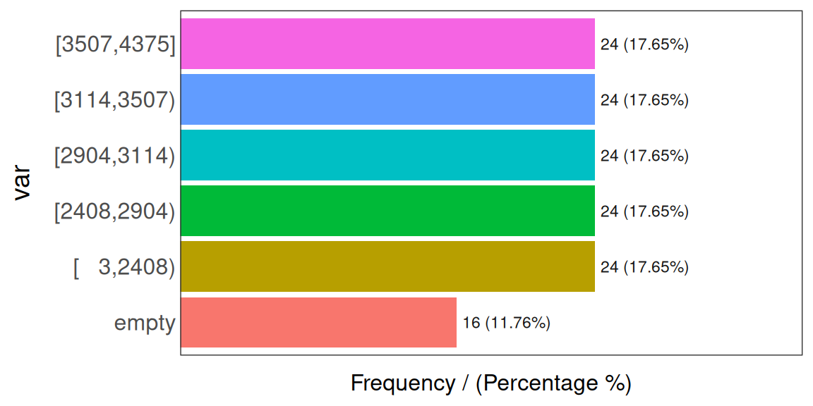

2 데이터 준비
2.1 데이터 유형 처리
2.1.1 무엇에 대한 내용인가요?
데이터 프로젝트를 시작할 때 가장 먼저 해야 할 일 중 하나는 각 변수에 올바른 데이터 유형을 할당하는 것입니다. 이는 간단해 보이는 작업이지만, 일부 알고리즘은 특정 데이터 유형으로 작동합니다. 여기서는 각 경우의 의미를 예시와 함께 설명하면서 이러한 변환을 다루려고 합니다.

Figure 2.1: 피보나치 나선
피보나치 수열. 자연과 인체에 존재하는 숫자의 순서.
이 장에서 무엇을 검토할 예정인가요?
- 올바른 데이터 유형 감지
- 범주형을 숫자형으로 변환하는 방법
- 숫자형을 범주형으로 변환하는 방법 (이산화 방법)
- 이론 및 실제적 측면 (R 예제)
- 예측 모델이 숫자형 변수를 보는 방식
2.1.2 데이터 유형의 세계
주요 데이터 유형은 숫자형과 범주형 두 가지입니다. 범주형의 다른 이름으로는 문자열과 명목형이 있습니다.
범주형의 하위 집합으로 순서형 또는 R에서 정렬된(ordered) 팩터라고 불리는 유형이 있습니다. 적어도 R에서는 이 유형은 특정 순서로 범주를 그릴 때만 관련이 있습니다. R 예시는 다음과 같습니다.
# 순서형 또는 정렬된 팩터 생성
var_factor=factor(c("3_high", "2_mid", "1_low"))
var_ordered=factor(var_factor, ordered = T)
var_ordered숫자형과 범주형이 가장 필요하므로 이 데이터 유형에는 너무 많은 주의를 기울이지 마십시오.
2.1.3 알고리즘별 데이터 유형
일부 알고리즘은 다음과 같이 작동합니다.
- 📊 범주형 데이터만 사용
- 📏 숫자형 데이터만 사용
- 📊📏 두 가지 유형 모두 사용
또한, 모든 예측 모델이 결측값을 처리할 수 있는 것은 아닙니다.
데이터 사이언스 라이브 북은 이 모든 상황을 다루려고 합니다.
2.1.4 범주형 변수를 숫자형으로 변환하기
R의 caret 패키지를 사용하면 모든 범주형 변수를 플래그 변수(더미 변수라고도 함)로 변환하는 것은 간단한 작업입니다.
원래 범주형 변수에 30개의 가능한 값이 있다면, 30개의 새 열이 생성되어 0 또는 1 값을 가지게 되며, 여기서 1은 해당 행에 해당 범주가 존재함을 나타냅니다.
R의 caret 패키지를 사용하면 이 변환은 단 두 줄의 코드만 필요합니다.
library(caret) # dummyVars 함수 포함
library(dplyr) # 데이터 정제 라이브러리
library(funModeling) # df_status 함수 포함
# 범주형 변수 확인
status=df_status(heart_disease)## variable q_zeros p_zeros q_na p_na q_inf p_inf type unique
## 1 age 0 0.00 0 0.00 0 0 integer 41
## 2 gender 0 0.00 0 0.00 0 0 factor 2
## 3 chest_pain 0 0.00 0 0.00 0 0 factor 4
## 4 resting_blood_pressure 0 0.00 0 0.00 0 0 integer 50
## 5 serum_cholestoral 0 0.00 0 0.00 0 0 integer 152
## 6 fasting_blood_sugar 258 85.15 0 0.00 0 0 factor 2
## 7 resting_electro 151 49.83 0 0.00 0 0 factor 3
## 8 max_heart_rate 0 0.00 0 0.00 0 0 integer 91
## 9 exer_angina 204 67.33 0 0.00 0 0 integer 2
## 10 oldpeak 99 32.67 0 0.00 0 0 numeric 40
## 11 slope 0 0.00 0 0.00 0 0 integer 3
## 12 num_vessels_flour 176 58.09 4 1.32 0 0 integer 4
## 13 thal 0 0.00 2 0.66 0 0 factor 3
## 14 heart_disease_severity 164 54.13 0 0.00 0 0 integer 5
## 15 exter_angina 204 67.33 0 0.00 0 0 factor 2
## 16 has_heart_disease 0 0.00 0 0.00 0 0 factor 2## variable
## 1 gender
## 2 chest_pain
## 3 fasting_blood_sugar
## 4 resting_electro
## 5 thal
## 6 exter_angina
## 7 has_heart_disease# 모든 범주형 변수(팩터 및 문자열)를 수치형 변수로 변환합니다.
# 기존 변수를 생략하므로 변환 후에 제거할 필요가 없으며, 데이터가 바로 사용 가능합니다.
dmy = dummyVars(" ~ .", data = heart_disease)
heart_disease_2 = data.frame(predict(dmy, newdata = heart_disease))
# 새로운 수치형 데이터셋 확인:
colnames(heart_disease_2)## [1] "age" "gender.female" "gender.male"
## [4] "chest_pain.1" "chest_pain.2" "chest_pain.3"
## [7] "chest_pain.4" "resting_blood_pressure" "serum_cholestoral"
## [10] "fasting_blood_sugar.0" "fasting_blood_sugar.1" "resting_electro.0"
## [13] "resting_electro.1" "resting_electro.2" "max_heart_rate"
## [16] "exer_angina" "oldpeak" "slope"
## [19] "num_vessels_flour" "thal.3" "thal.6"
## [22] "thal.7" "heart_disease_severity" "exter_angina.0"
## [25] "exter_angina.1" "has_heart_disease.no" "has_heart_disease.yes"원본 데이터 heart_disease는 범주형 변수 없이 수치형 및 더미 변수만 포함된 heart_disease_2로 변환되었습니다. 새로 생성된 각 변수 명에는 점(.) 뒤에 해당 값이 붙습니다.
예를 들어, 4가지 값(1, 2, 3, 4)을 가질 수 있는 chest_pain 변수의 7번째 환자(행)에 대해 변환 전후를 확인하면 다음과 같습니다.
## [1] 4## chest_pain.1 chest_pain.2 chest_pain.3 chest_pain.4
## 7 0 0 0 1수치형 변수만 유지 및 변형하고 명목형 변수를 제외함으로써, heart_disease_2 데이터는 분석에 바로 사용할 준비가 되었습니다.
dummyVars에 대한 더 자세한 정보: http://amunategui.github.io/dummyVar-Walkthrough/
2.1.5 범주형인가요, 수치형인가요? 생각해 봅시다.
1, 2, 3, 4의 값을 가질 수 있는 chest_pain 변수를 생각해 보세요. 이 변수는 범주형인가요, 수치형인가요?
만약 값이 순서가 있다면, 즉 1 < 2 < 3 < 4와 같이 순서(order)를 나타낸다면 수치형으로 고려될 수 있습니다.
의사결정 트리 모델을 만든다면, “If chest_pain > 2.5, then...”과 같은 규칙을 발견할 수 있습니다. 이게 말이 될까요? 알고리즘은 실제 존재하지 않는 값(2.5)을 기준으로 변수를 분할하지만, 우리는 이를 “만약 chest_pain이 3 이상이라면…”으로 해석합니다.
2.1.5.1 알고리즘처럼 생각하기
두 개의 수치형 입력 변수와 하나의 이진 타겟 변수를 생각해 봅시다. 알고리즘은 각 숫자 사이에 무한한 값이 존재한다고 가정하고 두 입력 변수를 평면 위의 점으로 _인식_합니다.
예를 들어, 서포트 벡터 머신(SVM)은 타겟 변수의 클래스를 분리하기 위해 여러 개의 벡터를 생성합니다. 이 벡터들을 기반으로 영역(regions)을 찾습니다. 범주형 변수를 기반으로 이러한 영역을 찾는 것이 가능할까요? 불가능합니다. 이것이 바로 SVM이 인공 신경망과 마찬가지로 수치형 변수만 지원하는 이유입니다.

Figure 2.2: 서포트 벡터 머신 (SVM)
이미지 출처: ZackWeinberg
위 이미지는 세 개의 선을 보여주며, 이는 서로 다른 세 개의 결정 경계 또는 영역을 나타냅니다.
SVM 개념에 대한 빠른 소개를 보려면 다음 짧은 영상을 참고하세요: SVM Demo.
하지만 의사결정 트리, 랜덤 포레스트, 그레디언트 부스팅 머신과 같은 트리 기반 모델은 그 검색 공간이 영역(SVM과 동일)뿐만 아니라 범주일 수도 있기 때문에 두 가지 유형을 모두 처리할 수 있습니다. 예: “if postal_code is AX441AG and age > 55, then...”.
다시 심장 질환 예제로 돌아가서, chest_pain 변수는 순서를 가지고 있습니다. 이 점을 활용해야 합니다. 왜냐하면 이를 범주형 변수로 변환하면 정보를 잃게 되기 때문이며, 이는 데이터 유형을 처리할 때 중요한 포인트입니다.
2.1.5.2 모든 것을 범주형으로 처리하는 것이 해결책일까요?
아니요… 수치형 변수는 순서 덕분에 명목형 변수보다 더 많은 정보를 담고 있습니다. 범주형 변수에서는 값들을 직접 비교할 수 없습니다. 예를 들어, If postal code is higher than "AX2004-P"와 같은 규칙을 만드는 것은 불가능합니다.
명목형 변수의 값들은 참조할 다른 변수(보통 예측할 결과값)가 있을 때만 비교될 수 있습니다.
예를 들어, 우편 번호 “AX2004-P”가 “MA3942-H”보다 더 높은 이유는 해당 지역에 사진 강의 수강에 관심 있는 사람들이 더 많기 때문일 수 있습니다.
또한, 고카디널리티(high cardinality)는 범주형 변수에서 문제가 될 수 있습니다. 예를 들어, 수백 개의 다른 값을 포함하는 postal code 변수가 그렇습니다. 이 책은 기술 통계량 및 예측 모델링 장에서 고카디널리티 변수를 처리하는 방법을 다룹니다.
어쨌든 모든 변수를 범주형으로 변환하고 어떤 일이 일어나는지 직접 _무료 테스트_를 해볼 수 있습니다. 수치형 변수일 때의 결과와 비교해 보세요. 테스트를 위해 Kappa나 ROC 통계량과 같은 좋은 오차 측정 지표를 사용하고, 결과를 교차 검증하는 것을 잊지 마세요.
2.1.5.3 범주형을 수치형 변수로 변환할 때 주의할 점
범주형 변수를 수치형으로 변환해야 하는 상황을 가정해 봅시다. 이전 사례와 같이 각 범주에 다른 숫자를 할당하는 변환(transformation)을 시도해 보겠습니다.
이러한 변환을 할 때는 변수에 순서를 도입하게 되므로 주의해야 합니다.
네 개의 행을 가진 다음 데이터를 고려해 보세요. 처음 두 변수는 visits와 postal_code입니다 (이는 두 개의 입력 변수이거나, visits를 입력으로 하고 postal_code를 출력으로 사용할 때 모두 해당됩니다).
다음 코드는 두 가지 기준에 따라 변환된 postal_code에 따른 visits를 보여줍니다.
transformation_1: 주어진 순서에 따라 일련번호를 할당.transformation_2:visits의 수에 따라 숫자를 할당.
# creating data -toy- sample
df_pc=data.frame(visits=c(10, 59, 27, 33), postal_code=c("AA1", "BA5", "CG3", "HJ1"), transformation_1=c(1,2,3,4), transformation_2=c(1, 4, 2, 3 ))
# printing table
knitr::kable(df_pc)| visits | postal_code | transformation_1 | transformation_2 |
|---|---|---|---|
| 10 | AA1 | 1 | 1 |
| 59 | BA5 | 2 | 4 |
| 27 | CG3 | 3 | 2 |
| 33 | HJ1 | 4 | 3 |
library(gridExtra)
# transformation 1
plot_1=ggplot(df_pc, aes(x=transformation_1, y=visits, label=postal_code)) + geom_point(aes(color=postal_code), size=4)+ geom_smooth(method=loess, group=1, se=FALSE, color="lightblue", linetype="dashed") + theme_minimal() + theme(legend.position="none") + geom_label(aes(fill = factor(postal_code)), colour = "white", fontface = "bold")
# transformation 2
plot_2=ggplot(df_pc, aes(x=transformation_2, y=visits, label=postal_code)) + geom_point(aes(color=postal_code), size=4)+ geom_smooth(method=lm, group=1, se=FALSE, color="lightblue", linetype="dashed") + theme_minimal() + theme(legend.position="none") + geom_label(aes(fill = factor(postal_code)), colour = "white", fontface = "bold")
# 여러 플롯을 나란히 배치
grid.arrange(plot_1, plot_2, ncol=2)Figure 2.3: 데이터 변환 비교
네 개의 행으로 예측 모델을 구축하는 사람은 아무도 없겠지만, 이 예제의 의도는 관계가 비선형(transformation_1)에서 선형(transformation_2)으로 어떻게 변하는지 보여주기 위함입니다. 이는 예측 모델이 관계를 더 쉽게 설명하고 파악할 수 있게 해줍니다.
데이터 행이 수백만 개로 늘어나고 변수 수가 수백 개로 확장되어도 효과는 동일합니다. 작은 데이터로부터 배우는 것은 이러한 경우에 올바른 접근 방식입니다.
2.1.6 수치형 변수 이산화 (Discretizing numerical variables)
이 프로세스는 데이터를 구간(bin)으로 나누어 범주형으로 변환하는 과정입니다. 멋진 정의를 위해 _위키백과_를 인용하자면: 이산화(Discretization)는 연속적인 함수, 모델, 방정식을 이산적인 대응물로 옮기는 과정과 관련이 있습니다.
구간(bins)은 버킷(buckets) 또는 세그먼트(segments)라고도 불립니다. 예제를 계속 살펴보겠습니다.
2.1.6.1 데이터에 대하여
이 데이터는 발육 부진(stunted) 아동의 비율에 대한 정보를 담고 있습니다. 이상적인 값은 0입니다.
이 지표는 발육 부진으로 고통받는 5세 미만 아동의 비율을 반영합니다. 발육이 부진한 아동은 질병과 사망의 위험이 더 큽니다.
데이터 출처: ourworldindata.org, hunger and undernourishment.
먼저, 간단한 데이터 준비를 해야 합니다. 각 행은 국가-연도 쌍을 나타내므로, 국가별로 가장 최신 지표 값을 가져와야 합니다.
data_stunting=read.csv(file = "https://goo.gl/hFEUfN",
header = T,
stringsAsFactors = F)
# renaming the metric
data_stunting=
dplyr::rename(
data_stunting,
share_stunted_child=
Share.of.stunted.children.under.5
)
# doing the grouping mentioned before
d_stunt_grp = group_by(data_stunting, Entity) %>%
filter(Year == max(Year)) %>%
dplyr::summarise(share_stunted_child=
max(share_stunted_child)
)가장 표준적인 구간화(binning) 기준은 다음과 같습니다.
- 동일 간격 (Equal range)
- 동일 빈도 (Equal frequency)
- 사용자 정의 구간 (Custom bins)
아래에서 각각에 대해 설명합니다.
2.1.6.2 동일 간격 (Equal range)
데이터 분포를 확인하는 히스토그램에서 흔히 볼 수 있는 방식이지만, 이상치에 매우 취약합니다. 예를 들어 네 개의 구간을 만들려면 (최대값 - 최소값)을 4로 나누어야 합니다.
# funModeling에 equal_freq(이산화) 함수가 포함되어 있습니다.
library(funModeling)
# ggplot2 it provides 'cut_interval' function used to
# split the variables based on equal range criteria
library(ggplot2)
# `cut` 함수와 마찬가지로 과학적 표기법을 비활성화하려면
# `dig.lab=9` 매개변수를 추가하세요.
d_stunt_grp$share_stunted_child_eq_range=
cut_interval(d_stunt_grp$share_stunted_child, n = 4)
# The ‘describe’ function from Hmisc package is
# extremely useful to profile data
describe(d_stunt_grp$share_stunted_child_eq_range)## d_stunt_grp$share_stunted_child_eq_range
## n missing distinct
## 154 0 4
##
## Value [1.3,15.8] (15.8,30.3] (30.3,44.8] (44.8,59.3]
## Frequency 62 45 37 10
## Proportion 0.403 0.292 0.240 0.065# Plotting the variable
p2=ggplot(d_stunt_grp,
aes(share_stunted_child_eq_range)
) +
geom_bar(fill="#009E73") +
theme_bw()
p2Figure 2.4: 동일 간격 이산화
describe 결과는 변수에 4개의 카테고리가 있음을 알려주며, 괄호/대괄호 사이에 각 카테고리별 총 사례 수(절대값 및 상대값)를 보여줍니다. 예를 들어, 카테고리 (15.8,30.3]은 share_stunted_child 값이 15.8(미포함)에서 30.3(포함) 사이인 모든 사례를 포함합니다.
이 구간은 45번 나타나며 전체 사례의 29%를 차지합니다.
2.1.6.3 동일 빈도 (Equal frequency)
이 기술은 백분위수(percentiles)를 기준으로 각 구간에 동일한 수의 관측치가 들어가도록 그룹화합니다. 백분위수에 대한 자세한 정보는 부록 1: 백분위수의 마법 장을 참조하세요.
funModeling 패키지에는 이 기준에 따라 구간을 생성하는 equal_freq 함수가 포함되어 있습니다.
d_stunt_grp$stunt_child_ef=
equal_freq(var = d_stunt_grp$share_stunted_child,
n_bins = 4
)
# profiling variable
describe(d_stunt_grp$stunt_child_ef)## d_stunt_grp$stunt_child_ef
## n missing distinct
## 154 0 4
##
## Value [ 1.3, 9.5) [ 9.5,20.8) [20.8,32.9) [32.9,59.3]
## Frequency 40 37 39 38
## Proportion 0.260 0.240 0.253 0.247Figure 2.5: 동일 빈도 예제
이 경우, 4개의 구간을 선택했으므로 각 구간은 약 25%의 점유율을 가집니다.
2.1.6.4 사용자 정의 구간 (Custom bins)
구간을 나눌 지점을 이미 알고 있다면 cut 함수를 사용할 수 있습니다.
# dig.lab 매개변수는 과학적 표기법을 "비활성화"합니다.
d_stunt_grp$share_stunted_child_custom=
cut(d_stunt_grp$share_stunted_child,
breaks = c(0, 2, 9.4, 29, 100)
)
describe(d_stunt_grp$share_stunted_child_custom)## d_stunt_grp$share_stunted_child_custom
## n missing distinct
## 154 0 4
##
## Value (0,2] (2,9.4] (9.4,29] (29,100]
## Frequency 5 35 65 49
## Proportion 0.032 0.227 0.422 0.318Figure 2.6: 수동 이산화
각 버킷의 최대값만 정의하면 된다는 점에 유의하세요.
일반적으로 최소값이나 최대값을 모르는 경우가 많습니다. 그런 경우에는 -Inf와 Inf 값을 사용할 수 있습니다. 그렇지 않고 범위 밖의 값을 정의하면 cut은 NA 값을 할당합니다.
최소값과 최대값을 함수를 사용하여 할당하는 것이 좋은 관행입니다. 이 사례에서 변수는 백분율이므로 범위가 0에서 100 사이임을 미리 알고 있지만, ⚠️ 만약 범위를 모른다면 어떤 일이 벌어질까요?
함수는 절단 지점보다 낮거나 높은 값에 대해 NA를 반환할 것입니다. 한 가지 해결책은 변수의 최소값과 최대값을 가져오는 것입니다.
# 최소값과 최대값 가져오기
min_value=min(d_stunt_grp$share_stunted_child)
max_value=max(d_stunt_grp$share_stunted_child)
# 최소값을 포함하려면 `include.lowest=T`로 설정하세요.
# 그렇지 않으면 NA로 할당됩니다.
d_stunt_grp$share_stunted_child_custom_2=
cut(d_stunt_grp$share_stunted_child,
breaks = c(min_value, 2, 9.4, 29, max_value),
include.lowest = T)
describe(d_stunt_grp$share_stunted_child_custom_2)## d_stunt_grp$share_stunted_child_custom_2
## n missing distinct
## 154 0 4
##
## Value [1.3,2] (2,9.4] (9.4,29] (29,59.3]
## Frequency 5 35 65 49
## Proportion 0.032 0.227 0.422 0.3182.1.7 새로운 데이터에서의 이산화
이러한 모든 변환은 변수의 분포를 기반으로 한 학습 데이터셋이 주어졌을 때 이루어집니다. 동일 빈도 및 동일 간격 이산화의 경우가 그렇습니다. 하지만 새로운 데이터가 들어온다면 어떻게 될까요?
새로운 최소값이나 최대값이 나타나면 동일 간격 방법의 구간 범위에 영향을 미칩니다. 새로운 값이 들어오면 동일 빈도 방법에서 보았듯이 백분위수를 기준으로 한 지점들이 이동하게 됩니다.
예를 들어, 제안된 예제에 88, 2, 7, 3이라는 값을 가진 네 개의 사례를 추가한다고 가정해 보겠습니다.
# 4개의 새로운 값이 들어오는 상황 시뮬레이션
updated_data=c(d_stunt_grp$share_stunted_child, 88, 2, 7, 3)
# 동일 빈도 기준 이산화
updated_data_eq_freq=equal_freq(updated_data,4)
# 결과는...
describe(updated_data_eq_freq)## updated_data_eq_freq
## n missing distinct
## 158 0 4
##
## Value [ 1.3, 9.3) [ 9.3,20.6) [20.6,32.9) [32.9,88.0]
## Frequency 40 39 40 39
## Proportion 0.253 0.247 0.253 0.247이제 이전에 생성한 구간과 비교해 보겠습니다:
## d_stunt_grp$stunt_child_ef
## n missing distinct
## 154 0 4
##
## Value [ 1.3, 9.5) [ 9.5,20.8) [20.8,32.9) [32.9,59.3]
## Frequency 40 37 39 38
## Proportion 0.260 0.240 0.253 0.247모든 구간이 바뀌었습니다! 😱 이들은 새로운 카테고리이기 때문에, 예측 모델은 이들을 모두 새로운 값으로 인식하여 제대로 처리하지 못할 것입니다.
해결책은 데이터 준비를 할 때 절단 지점(cut points)을 저장해 두는 것입니다. 그런 다음 모델을 운영 환경에서 실행할 때 사용자 정의 구간 이산화를 사용하면 모든 새로운 사례가 적절한 카테고리에 강제로 들어가게 됩니다. 이렇게 하면 예측 모델은 항상 동일한 것을 보게 됩니다.
해결책은 다음 섹션에 있습니다.
2.1.8 자동 데이터 프레임 이산화
funModeling 패키지(버전 1.6.6 이상)는 이산화 작업을 돕기 위해 두 가지 함수인 discretize_get_bins와 discretize_df를 도입했습니다.
예시를 하나 살펴보겠습니다. 먼저 현재 데이터 유형을 확인합니다.
## variable q_zeros p_zeros q_na p_na q_inf p_inf type unique
## 1 age 0 0.00 0 0.00 0 0 integer 41
## 2 gender 0 0.00 0 0.00 0 0 factor 2
## 3 chest_pain 0 0.00 0 0.00 0 0 factor 4
## 4 resting_blood_pressure 0 0.00 0 0.00 0 0 integer 50
## 5 serum_cholestoral 0 0.00 0 0.00 0 0 integer 152
## 6 fasting_blood_sugar 258 85.15 0 0.00 0 0 factor 2
## 7 resting_electro 151 49.83 0 0.00 0 0 factor 3
## 8 max_heart_rate 0 0.00 0 0.00 0 0 integer 91
## 9 exer_angina 204 67.33 0 0.00 0 0 integer 2
## 10 oldpeak 99 32.67 0 0.00 0 0 numeric 40
## 11 slope 0 0.00 0 0.00 0 0 integer 3
## 12 num_vessels_flour 176 58.09 4 1.32 0 0 integer 4
## 13 thal 0 0.00 2 0.66 0 0 factor 3
## 14 heart_disease_severity 164 54.13 0 0.00 0 0 integer 5
## 15 exter_angina 204 67.33 0 0.00 0 0 factor 2
## 16 has_heart_disease 0 0.00 0 0.00 0 0 factor 2## variable type unique q_na
## 1 gender factor 2 0
## 2 chest_pain factor 4 0
## 3 fasting_blood_sugar factor 2 0
## 4 resting_electro factor 3 0
## 5 thal factor 3 2
## 6 exter_angina factor 2 0
## 7 has_heart_disease factor 2 0
## 8 age integer 41 0
## 9 resting_blood_pressure integer 50 0
## 10 serum_cholestoral integer 152 0
## 11 max_heart_rate integer 91 0
## 12 exer_angina integer 2 0
## 13 slope integer 3 0
## 14 num_vessels_flour integer 4 4
## 15 heart_disease_severity integer 5 0
## 16 oldpeak numeric 40 0팩터(factor), 정수(integer), 수치형(numeric) 변수들이 섞여 있습니다! 변환은 두 단계로 이루어집니다. 첫째, 각 세그먼트가 시작되는 절단값 또는 임계값을 가져옵니다. 둘째, 해당 임계값을 사용하여 변수를 범주형으로 변환합니다.
다음 예제에서는 max_heart_rate와 oldpeak 두 변수를 이산화할 것입니다. 또한 결측값에 대해 함수가 어떻게 작동하는지 테스트하기 위해 oldpeak에 몇 가지 NA 값을 도입하겠습니다.
# creating a copy to keep original data clean
heart_disease_2=heart_disease
# Introducing some missing values in the first 30 rows of the oldpeak variable
heart_disease_2$oldpeak[1:30]=NA1단계) 각 입력 변수에 대해 구간 임계값 가져오기:
discretize_get_bins는 discretize_df 함수에서 사용될 데이터 프레임을 반환하며, 이 함수는 최종 처리된 데이터 프레임을 반환합니다.
## Variables processed: max_heart_rate, oldpeak## variable cuts
## 1 max_heart_rate 131|147|160|171|Inf
## 2 oldpeak 0.1|0.3|1.1|2|Inf매개변수:
data: 처리할 변수가 포함된 데이터 프레임.input: 변수 이름을 포함하는 문자열 벡터.n_bins: 이산화된 데이터에서 가질 구간/세그먼트의 수.
각 변수에 대한 각 임계값 지점(또는 상한 경계)을 확인할 수 있습니다.
참고: 버전 1.6.6에서 1.6.7로의 변경 사항:
discretize_get_bins는 해당 값이 항상 최소값으로 간주되었기 때문에-Inf임계값을 생성하지 않습니다.- 단일 값 카테고리는 이제 범위로 표시됩니다. 예를 들어
"5"였던 것은 이제"[5, 6)"으로 표시됩니다. - 버킷 포맷이 변경되었을 수 있으므로, 이 함수를 운영 환경에서 사용 중이었다면 새로운 값을 확인해야 합니다.
다음 단계로 넘어갈 시간입니다!
2단계) 각 변수에 임계값 적용하기:
# 이제 동일한 데이터 프레임이나 새로운 데이터 프레임(예: 시간이 지남에 따라 데이터가 변하는
# 예측 모델)에 적용할 수 있습니다.
heart_disease_discretized =
discretize_df(data=heart_disease_2,
data_bins=d_bins,
stringsAsFactors=T)## Warning: `funs()` was deprecated in dplyr 0.8.0.
## ℹ Please use a list of either functions or lambdas:
##
## # Simple named list: list(mean = mean, median = median)
##
## # Auto named with `tibble::lst()`: tibble::lst(mean, median)
##
## # Using lambdas list(~ mean(., trim = .2), ~ median(., na.rm = TRUE))
## ℹ The deprecated feature was likely used in the funModeling package.
## Please report the issue at <https://github.com/pablo14/funModeling/issues>.
## This warning is displayed once per session.
## Call `lifecycle::last_lifecycle_warnings()` to see where this warning was
## generated.## Variables processed: max_heart_rate, oldpeak매개변수:
data: 이산화할 수치형 변수가 포함된 데이터 프레임.data_bins:discretize_get_bins가 반환한 데이터 프레임. 사용자가 직접 변경하는 경우, 예제에 표시된 대로 각 상한 경계는 파이프 문자(|)로 구분되어야 합니다.stringsAsFactors: 기본값은TRUE이며, 최종 변수는 팩터(문자열 대신)가 되어 시각화할 때 유용합니다.
2.1.8.1 최종 결과 및 플롯
변환 전후:
## max_heart_rate_before max_heart_rate_after oldpeak_before oldpeak_after
## 1 171 [ 171, Inf] NA NA.
## 2 114 [-Inf, 131) NA NA.
## 3 151 [ 147, 160) 1.8 [ 1.1, 2.0)
## 4 160 [ 160, 171) 1.4 [ 1.1, 2.0)
## 5 158 [ 147, 160) 0.0 [-Inf, 0.1)
## 6 161 [ 160, 171) 0.5 [ 0.3, 1.1)최종 분포:
## max_heart_rate frequency percentage cumulative_perc
## 1 [-Inf, 131) 63 20.79 20.79
## 2 [ 147, 160) 62 20.46 41.25
## 3 [ 160, 171) 62 20.46 61.71
## 4 [ 131, 147) 59 19.47 81.18
## 5 [ 171, Inf] 57 18.81 100.00
##
## oldpeak frequency percentage cumulative_perc
## 1 [-Inf, 0.1) 97 32.01 32.01
## 2 [ 0.3, 1.1) 54 17.82 49.83
## 3 [ 1.1, 2.0) 54 17.82 67.65
## 4 [ 2.0, Inf] 50 16.50 84.15
## 5 NA. 30 9.90 94.05
## 6 [ 0.1, 0.3) 18 5.94 100.00## [1] "Variables processed: max_heart_rate, oldpeak"p5=ggplot(heart_disease_discretized,
aes(max_heart_rate)) +
geom_bar(fill="#0072B2") +
theme_bw() +
theme(axis.text.x =
element_text(angle = 45, vjust = 1, hjust=1)
)
p6=ggplot(heart_disease_discretized,
aes(oldpeak)) +
geom_bar(fill="#CC79A7") +
theme_bw() +
theme(axis.text.x =
element_text(angle = 45, vjust = 1, hjust=1)
)
gridExtra::grid.arrange(p5, p6, ncol=2)Figure 2.7: 자동 이산화 결과
동일 빈도를 계산할 때 oldpeak 변수에서 볼 수 있듯이 버킷당 동일한 수의 사례를 얻는 것이 항상 가능한 것은 아닙니다.
2.1.8.2 NA 처리
NA 값과 관련하여, 새로운 oldpeak 변수에는 6개의 카테고리가 있습니다. 즉, n_bins=5에서 정의된 5개 카테고리와 NA. 값입니다. 끝에 있는 점은 결측값의 존재를 나타냅니다.
2.1.8.3 추가 정보
discretize_df는 결측값을NA.문자열로 변환하지 않고는 절대NA를 반환하지 않습니다.n_bins는 모든 변수에 대한 구간 수를 설정합니다.input이 누락된 경우, 고유 값의 수가 구간 수(n_bins)보다 큰 모든 수치형/정수형 변수에 대해 실행됩니다.input에 정의된 변수만 처리되며 나머지 변수는 전혀 수정되지 않습니다.discretize_get_bins는 단지 데이터 프레임을 반환하므로 텍스트 파일이나 R 세션에서 필요에 따라 직접 수정할 수 있습니다.
2.1.8.4 새로운 데이터에서의 이산화
우리 데이터에서 max_heart_rate의 최소값은 71입니다. 데이터 준비 과정은 새로운 데이터에 대해 견고해야 합니다. 예를 들어 max_heart_rate가 68인 새로운 환자가 들어오면, 현재 프로세스는 이 환자를 가장 낮은 카테고리에 할당할 것입니다.
다른 패키지의 다른 함수에서는 범위를 벗어났기 때문에 NA를 반환할 수도 있습니다.
앞서 언급했듯이 시간이 지남에 따라 새로운 데이터가 들어오면 새로운 최소값이나 최대값이 나타날 가능성이 큽니다. 이는 프로세스를 방해할 수 있습니다. 이를 해결하기 위해 discretize_df는 항상 -Inf/Inf를 최소값/최대값으로 가집니다. 따라서 최소값보다 낮거나 최대값보다 높은 새로운 값은 각각 가장 낮거나 높은 세그먼트에 추가됩니다.
discretize_get_bins가 반환한 데이터 프레임은 새로운 데이터에 적용하기 위해 저장되어야 합니다. 만약 이산화 과정이 새로운 데이터와 함께 실행될 의도가 없다면, 두 개의 함수를 가질 이유가 없으며 하나면 충분할 것입니다. 또한 discretize_get_bins의 결과를 저장할 필요도 없을 것입니다.
이러한 2단계 접근 방식을 통해 두 가지 경우를 모두 처리할 수 있습니다.
2.1.8.5 2단계 이산화에 대한 결론
discretize_get_bins + discretize_df의 사용은 바로 사용할 준비가 된 깨끗한 데이터 프레임을 통해 빠른 데이터 준비를 제공합니다. 각 세그먼트가 어디서 시작하고 끝나는지 명확하게 보여주며, 통계 보고서를 작성할 때 필수적입니다.
새로운 데이터에서 새로운 최소값/최대값을 대할 때 실패하지 않기로 결정한 것은 단순한 결정일 뿐입니다. 어떤 문맥에서는 실패하는 것이 바람직한 행동일 수도 있습니다.
인간의 개입: 데이터 프레임을 이산화하는 가장 쉬운 방법은 예제에서 본 것처럼 모든 변수에 동일한 수의 구간을 적용하는 것이지만, 튜닝이 필요한 경우에는 일부 변수에 다른 수의 구간이 필요할 수 있습니다. 예를 들어, 분산이 적은 변수는 적은 수의 구간으로도 잘 작동할 수 있습니다.
세그먼트 수의 일반적인 값은 3, 5, 10 또는 20(그 이상은 아님)이 될 수 있습니다. 이 결정은 데이터 과학자의 몫입니다.
2.1.8.6 보너스 트랙: 트레이드오프의 예술 ⚖️
- 많은 수의 구간 => 더 많은 노이즈 포착.
- 적은 수의 구간 => 과도한 단순화, 변동성 감소.
이 용어들이 머신러닝의 다른 용어들과 비슷하게 들리나요?
정답은: 네! 입니다. 단 한 가지 예만 들자면, 예측 모델에서 변수를 추가하거나 제거하는 사이의 트레이드오프와 같습니다.
- 더 많은 변수: 과적합(overfitting) 경고 (너무 상세한 예측 모델).
- 더 적은 변수: 과소적합(underfitting) 위험 (일반적인 패턴을 포착하기에 정보 부족).
수천 년 동안 동양 철학이 지적해 왔듯이, 하나의 가치와 그 반대 사이에서 올바른 균형을 찾는 것은 하나의 예술입니다.
2.1.9 최종 생각
보았듯이, 이산화나 데이터 준비에 있어 공짜 점심은 없습니다. _자동화된 시스템이나 지능형 시스템_이 인간의 개입이나 분석 없이 이러한 모든 상황을 어떻게 처리할 것이라 생각하나요?
물론 일부 작업은 자동화된 프로세스에 위임할 수 있지만, 처리할 올바른 입력 데이터를 제공하는 데이터 준비 단계에서 인간은 필수적입니다.
가장 많이 사용되는 두 가지 데이터 유형인 범주형 또는 수치형으로 변수를 할당하는 것은 데이터의 성격과 선택된 알고리즘(일부는 한 가지 데이터 유형만 지원)에 따라 달라집니다.
이 변환은 분석에 약간의 편향을 도입합니다. 결측값을 다룰 때도 비슷한 사례가 있습니다: 결측 데이터의 처리 및 대치.
범주형 변수로 작업할 때, 타겟 변수에 따라 카테고리를 재배치하여 관계를 더 잘 드러내도록 분포를 변경할 수 있습니다. 비선형 변수 관계를 선형 관계로 변환하는 것이죠.
2.1.10 보너스 트랙 💥
이산화 변수 섹션으로 돌아가서 지금까지 살펴본 모든 변환을 플롯해 보겠습니다.
Figure 2.8: 동일한 데이터, 다른 시각화
입력 데이터는 항상 동일합니다. 하지만 이러한 모든 방법은 동일한 것에 대해 다른 관점을 보여줍니다.
예측 모델링을 위한 동일 빈도 사용과 같이 특정 상황에 더 적합한 관점들이 있습니다.
이 사례는 하나의 변수만 고려하고 있지만, 여러 변수를 동시에 가진 경우, 즉 N-차원 공간에서도 논리는 동일합니다.
예측 모델을 구축할 때, 사람들이 어떤 대상에 대해 의견을 내는 것과 같이 동일한 점의 무리를 다른 방식으로 설명합니다.

2.2 기술 통계에서의 고카디널리티 변수
2.2.1 무엇에 대한 내용인가요?
고카디널리티(high cardinality) 변수는 가질 수 있는 값이 매우 많은 변수를 말합니다. 예를 들어 국가(country)가 있습니다.
이 장에서는 파레토 법칙(Pareto rule)에 기반한 카디널리티 감소를 다루며, 대부분의 값이 어디에 집중되어 있는지와 변수 분포를 빠르게 보여주는 freq 함수를 사용합니다.
2.2.2 기술 통계에서의 고카디널리티
다음 예제는 person, country, has_flu라는 3개의 열을 가진 910개 사례의 설문조사를 포함하고 있습니다. has_flu는 지난 달에 해당 질병을 앓았는지 여부를 나타냅니다.
data_country 데이터는 funModeling 패키지(버전 1.6 이상)에 포함되어 있습니다.
data_country의 빠른 프로파일링 (처음 10행)
## person country has_flu
## 478 478 France no
## 990 990 Brazil no
## 606 606 France no
## 575 575 Philippines no
## 806 806 France no
## 232 232 France no
## 422 422 Poland no
## 347 347 Romania no
## 858 858 Finland no
## 704 704 France no## Warning: The `<scale>` argument of `guides()` cannot be `FALSE`. Use "none" instead as
## of ggplot2 3.3.4.
## ℹ The deprecated feature was likely used in the funModeling package.
## Please report the issue at <https://github.com/pablo14/funModeling/issues>.
## This warning is displayed once per session.
## Call `lifecycle::last_lifecycle_warnings()` to see where this warning was
## generated.Figure 2.9: 국가 빈도 분석
## country frequency percentage cumulative_perc
## 1 France 288 31.65 31.65
## 2 Turkey 67 7.36 39.01
## 3 China 65 7.14 46.15
## 4 Uruguay 63 6.92 53.07
## 5 United Kingdom 45 4.95 58.02
## 6 Australia 41 4.51 62.53
## 7 Germany 30 3.30 65.83
## 8 Canada 19 2.09 67.92
## 9 Netherlands 19 2.09 70.01
## 10 Japan 18 1.98 71.99Figure 2.10: 독감 발생 여부 빈도 분석
## has_flu frequency percentage cumulative_perc
## 1 no 827 90.88 90.88
## 2 yes 83 9.12 100.00마지막 테이블은 has_flu="yes"인 행이 83개뿐임을 보여주며, 이는 전체 인원의 약 9%를 차지합니다.
하지만 이들 중 다수는 데이터에서 거의 비중을 차지하지 않습니다. 이것이 롱 테일(long tail) 현상이며, 카디널리티를 줄이는 한 가지 방법은 데이터 공유의 높은 비율(예: 70, 80 또는 90%)을 차지하는 카테고리들만 유지하는 파레토 법칙을 적용하는 것입니다.
# 'funModeling' 패키지의 'freq' 함수는 절단 지점을 설정하는 데 도움이 되는 누적 백분율(cumulative_percentage)을 가져옵니다.
country_freq = freq(data_country, 'country', plot = F)
# 'country_freq'는 빈도에 따라 정렬된 테이블이므로, 가장 높은 비중을 차지하는 처음 10개 행을 살펴봅시다.
country_freq %>% slice_head(n = 10)## country frequency percentage cumulative_perc
## 1 France 288 31.65 31.65
## 2 Turkey 67 7.36 39.01
## 3 China 65 7.14 46.15
## 4 Uruguay 63 6.92 53.07
## 5 United Kingdom 45 4.95 58.02
## 6 Australia 41 4.51 62.53
## 7 Germany 30 3.30 65.83
## 8 Canada 19 2.09 67.92
## 9 Netherlands 19 2.09 70.01
## 10 Japan 18 1.98 71.99따라서 10개 국가가 사례의 70% 이상을 대표합니다. 나머지 사례들에 other 카테고리를 할당하고 플롯을 그릴 수 있습니다.
data_country$country_2 = ifelse(data_country$country %in% pull(country_freq[1:10, ], country), data_country$country, 'other')
freq(data_country, 'country_2')Figure 2.11: 수정된 국가 변수 - 빈도 분석
## country_2 frequency percentage cumulative_perc
## 1 France 288 31.65 31.65
## 2 other 255 28.02 59.67
## 3 Turkey 67 7.36 67.03
## 4 China 65 7.14 74.17
## 5 Uruguay 63 6.92 81.09
## 6 United Kingdom 45 4.95 86.04
## 7 Australia 41 4.51 90.55
## 8 Germany 30 3.30 93.85
## 9 Canada 19 2.09 95.94
## 10 Netherlands 19 2.09 98.03
## 11 Japan 18 1.98 100.002.2.3 최종 코멘트
대표성이 낮은 카테고리는 가끔 Egypt, Eggypt.와 같이 데이터 오류인 경우가 있으며, 이는 데이터를 수집하는 나쁜 습관이나 소스에서 수집할 때 발생할 수 있는 오류의 증거가 될 수 있습니다.
데이터를 축소하는 일반적인 규칙은 없으며, 각 사례에 따라 다릅니다.
다음 권장 장: 예측 모델링에서의 고카디널리티 변수.

2.3 High Cardinality Variable in Predictive Modeling
2.3.1 무엇에 대한 내용인가요?
지난 장인 기술 통계에서의 고카디널리티에서 보았듯이, 우리는 주요 대표성을 가진 카테고리들만 유지하지만, 이를 기반으로 예측할 다른 변수가 있다면 어떨까요? 즉, country를 기반으로 has_flu를 예측하는 것입니다.
이전 방법을 사용하면 변수의 정보가 파괴되어 예측력을 잃게 될 수 있습니다. 이 장에서는 위에서 설명한 방법을 더 발전시켜, 자동 그룹화 함수인 auto_grouping을 사용하여 변수의 구조를 탐색하고 범주형 변수를 최적화하는 방법에 대한 아이디어를 제공할 것입니다. 하지만 더 중요한 것은 독자가 자신만의 최적화를 수행하도록 장려하는 것입니다.
다른 문헌에서는 이러한 재그룹화를 카디널리티 감소 또는 인코딩(encoding)이라고 부릅니다.
이 장에서 무엇을 검토할까요?
- 데이터 대표성의 개념 (샘플 크기).
- 타겟 또는 결과 변수가 있는 샘플 크기.
- R에서: 카디널리티를 줄이고 범주형 변수를 프로파일링하는 데 도움이 되는 방법 제시.
- 카디널리티를 줄인 전후의 실용적인 사례와 인사이트 추출.
- 랜덤 포레스트나 그레디언트 부스팅 머신과 같은 다양한 모델이 범주형 변수를 처리하는 방법.
2.3.2 하지만 변수를 재그룹화하는 것이 필요할까요?
사례에 따라 다르지만 가장 빠른 대답은 “예”입니다. 이 장에서 우리는 이러한 데이터 준비가 전체 정확도(ROC 곡선 아래 면적으로 측정)를 높이는 한 사례를 보게 될 것입니다.
데이터의 표현력(각 카테고리가 가진 행의 수)과 각 카테고리가 결과 변수와 얼마나 관련이 있는지 사이에는 트레이드오프가 존재합니다. 예: 일부 국가는 다른 국가보다 독감 사례에 더 취약할 수 있습니다.
funModeling 패키지에 포함된 data_country를 프로파일링합니다 (버전 1.6.5 이상으로 업데이트하세요).
data_country의 빠른 프로파일링 (처음 10행)
## person country has_flu country_2
## 478 478 France no France
## 990 990 Brazil no other
## 606 606 France no France
## 575 575 Philippines no other
## 806 806 France no France
## 232 232 France no France
## 422 422 Poland no other
## 347 347 Romania no other
## 858 858 Finland no other
## 704 704 France no FranceFigure 2.12: 처음 10개 국가
## country frequency percentage cumulative_perc
## 1 France 288 31.65 31.65
## 2 Turkey 67 7.36 39.01
## 3 China 65 7.14 46.15
## 4 Uruguay 63 6.92 53.07
## 5 United Kingdom 45 4.95 58.02
## 6 Australia 41 4.51 62.53
## 7 Germany 30 3.30 65.83
## 8 Canada 19 2.09 67.92
## 9 Netherlands 19 2.09 70.01
## 10 Japan 18 1.98 71.99Figure 2.13: 독감 분포
## has_flu frequency percentage cumulative_perc
## 1 no 827 90.88 90.88
## 2 yes 83 9.12 100.002.3.3 사례 🔍
예측 모델은 특정 값을 특정 결과와 매핑하려고 시도할 것이며, 우리의 경우 타겟 변수는 이진형입니다.
우리는 categ_analysis를 기반으로 타겟 변수 has_flu에 대한 country의 완전한 프로파일링을 계산할 것입니다.
각 행은 input 변수의 고유한 카테고리를 나타냅니다. 각 행 내에서 대표성과 가능성 측면에서 각 카테고리를 정의하는 속성을 찾을 수 있습니다.
# `categ_analysis`는 "funModeling" >= v1.6에서 사용할 수 있습니다. 사용 전 설치해 주세요.
country_profiling=categ_analysis(data=data_country, input="country", target = "has_flu")## Warning: `summarise_()` was deprecated in dplyr 0.7.0.
## ℹ Please use `summarise()` instead.
## ℹ The deprecated feature was likely used in the funModeling package.
## Please report the issue at <https://github.com/pablo14/funModeling/issues>.
## This warning is displayed once per session.
## Call `lifecycle::last_lifecycle_warnings()` to see where this warning was
## generated.## Warning: `group_by_()` was deprecated in dplyr 0.7.0.
## ℹ Please use `group_by()` instead.
## ℹ See vignette('programming') for more help
## ℹ The deprecated feature was likely used in the funModeling package.
## Please report the issue at <https://github.com/pablo14/funModeling/issues>.
## This warning is displayed once per session.
## Call `lifecycle::last_lifecycle_warnings()` to see where this warning was
## generated.
Figure 2.14: 타겟 vs. 입력 분석
- 참고 1: 첫 번째 열의 이름은
input변수에 따라 자동으로 조정됩니다. - 참고 2:
has_flu변수는yes와no값을 가집니다.categ_analysis는 평균, 합계 및 백분율을 계산하기 위해 대표성이 낮은 클래스(이 경우yes)에 내부적으로 숫자 1을 할당합니다.
이들은 categ_analysis가 반환하는 지표들입니다:
country:input변수의 각 카테고리 이름.mean_target:sum_target / q_rows, 해당 카테고리에 대한has_flu="yes"의 평균 수. 이것이 가능성(likelihood)입니다.sum_target: 각 카테고리에 있는has_flu="yes"값의 수량.perc_target:sum_target과 동일하지만 백분율로 표시됩니다.각 카테고리의 sum_target / 전체 sum_target. 이 열의 합은1.00입니다.q_rows:has_flu변수와 관계없이 해당 카테고리에 속한 행의 수량.input의 분포입니다. 이 열의 합은 분석된 전체 행 수입니다.perc_rows:q_rows와 관련되어 각 카테고리의 점유율 또는 백분율을 나타냅니다. 이 열의 합은1.00입니다.
2.3.3.1 여기서 어떤 결론을 내릴 수 있을까요?
첫 번째 France 행을 기반으로 예제를 읽어봅시다:
- 41명이 독감에 걸렸습니다 (
sum_target=41). 이 41명은 독감에 걸린 전체 인원의 거의 50%를 나타냅니다 (perc_target=0.494). - 프랑스에서 독감에 걸릴 확률은 14.2%입니다 (
mean_target=0.142). - 프랑스의 전체 행 = 288개 (910개 중). 이것이
q_rows변수이며,perc_rows는 동일한 수치를 백분율로 나타낸 것입니다.
국가별 필터를 고려하지 않으면 다음을 얻습니다:
sum_target열의 합은 데이터에 있는 독감 환자의 총합입니다.perc_target열의 합은1.00또는 100%입니다.q_rows열의 합은data_country데이터 프레임에 있는 총 행 수입니다.perc_rows열의 합은1.00또는 100%입니다.
2.3.4 예측 모델링을 위한 분석 🔮
예측 모델을 개발할 때, 우리는 특정 이벤트의 가능성을 높이는 값들에 관심을 가질 수 있습니다. 우리의 경우:
독감 환자를 찾을 가능성을 최대화하는 국가는 어디인가요?
쉽습니다. country_profiling을 mean_target 기준 내림차순으로 정렬하면 됩니다:
# country_profiling을 mean_target으로 정렬한 다음 처음 6개 국가 가져오기
country_profiling %>% arrange(desc(mean_target)) %>% head()## country mean_target sum_target perc_target q_rows perc_rows
## 1 Malaysia 1.000 1 0.012 1 0.001
## 2 Mexico 0.667 2 0.024 3 0.003
## 3 Portugal 0.200 1 0.012 5 0.005
## 4 United Kingdom 0.178 8 0.096 45 0.049
## 5 Uruguay 0.175 11 0.133 63 0.069
## 6 Israel 0.167 1 0.012 6 0.007좋습니다! 독감에 걸릴 확률이 가장 높은 국가로 Malasyia가 나왔습니다! 그곳 사람들의 100%가 독감에 걸렸습니다 (mean_has_flu=1.000).
하지만 우리의 상식은 아마도 무언가 잘못되었다고 조언합니다…
말레이시아의 행 수는 몇 개인가요? 정답: 1. -열: q_rows=1
말레이시아의 양성 사례는 몇 개인가요? 정답: 1. -열: sum_target=1
샘플을 늘려 이 비율이 높게 유지되는지 확인할 수 없으므로, 이는 예측 모델에서 과적합(overfit)을 유발하고 편향을 만들게 될 것입니다.
Mexico는 어떨까요? 3명 중 2명이 독감… 여전히 낮아 보입니다. 하지만 Uruguay는 17.3%의 확률(63건 중 11건)을 보이며, 이 63건은 전체 인구의 거의 7%를 차지합니다 (perc_row=0.069). 이 비율은 좀 더 신뢰할 수 있어 보입니다.
다음은 이를 처리하기 위한 몇 가지 아이디어입니다:
2.3.4.1 사례 1: 대표성이 낮은 값을 재범주화하여 줄이기
데이터에서 일정 비율 이상의 점유율을 가진 사례만 남깁니다. 예를 들어, 데이터에서 점유율이 1% 미만인 국가들의 이름을 other로 바꿉니다.
country_profiling=categ_analysis(data=data_country, input="country", target = "has_flu")
countries_high_rep=filter(country_profiling, perc_rows>0.01) %>% pull(country)
# 만약 countries_high_rep에 포함되지 않으면 `other` 카테고리 할당
data_country$country_new=ifelse(data_country$country %in% countries_high_rep, data_country$country, "other")독감 확률을 다시 확인해 봅시다.
country_profiling_new=categ_analysis(data=data_country, input="country_new", target = "has_flu")
country_profiling_new## country_new mean_target sum_target perc_target q_rows perc_rows
## 1 United Kingdom 0.178 8 0.096 45 0.049
## 2 Uruguay 0.175 11 0.133 63 0.069
## 3 Canada 0.158 3 0.036 19 0.021
## 4 France 0.142 41 0.494 288 0.316
## 5 Germany 0.100 3 0.036 30 0.033
## 6 Australia 0.098 4 0.048 41 0.045
## 7 Romania 0.091 1 0.012 11 0.012
## 8 Spain 0.091 1 0.012 11 0.012
## 9 Sweden 0.083 1 0.012 12 0.013
## 10 Netherlands 0.053 1 0.012 19 0.021
## 11 other 0.041 7 0.084 170 0.187
## 12 Turkey 0.030 2 0.024 67 0.074
## 13 Belgium 0.000 0 0.000 15 0.016
## 14 Brazil 0.000 0 0.000 13 0.014
## 15 China 0.000 0 0.000 65 0.071
## 16 Italy 0.000 0 0.000 10 0.011
## 17 Japan 0.000 0 0.000 18 0.020
## 18 Poland 0.000 0 0.000 13 0.014국가의 수가 급격히 줄어들었습니다 -74% 감소- 단지 1% 미만의 낮은 대표성 국가들을 줄임으로써 70개 국가 중 18개만 남았습니다.
other 카테고리에서 타겟 변수의 확률이 좀 더 안정화되었습니다. 이제 예측 모델이 Malaysia를 보게 되면 100%의 확률을 부여하는 대신 4.1% (mean_has_flu=0.041)를 부여하게 됩니다.
이 마지막 방법에 대한 조언:
이 기술을 맹목적으로 적용하지 않도록 주의하세요. 때때로 매우 불균형한(highly unbalanced) 타겟 예측(예: 이상 탐지, anomaly detection)에서는 이상 징후가 데이터의 1% 미만에서 나타나는 경우가 있습니다.
# 데이터 복제
d_abnormal=data_country
# 일부 국가에서 비정상적인 동작 시뮬레이션
d_abnormal$abnormal=ifelse(d_abnormal$country %in% c("Brazil", "Chile"), 'yes', 'no')
# 범주형 분석
ab_analysis=categ_analysis(d_abnormal, input = "country", target = "abnormal")
# 처음 6개 요소만 표시
head(ab_analysis)## country mean_target sum_target perc_target q_rows perc_rows
## 1 Brazil 1 13 0.867 13 0.014
## 2 Chile 1 2 0.133 2 0.002
## 3 Argentina 0 0 0.000 9 0.010
## 4 Asia/Pacific Region 0 0 0.000 1 0.001
## 5 Australia 0 0 0.000 41 0.045
## 6 Austria 0 0 0.000 1 0.001## abnormal frequency percentage cumulative_perc
## 1 no 895 98.35 98.35
## 2 yes 15 1.65 100.00이상 수치가 얼마나 있나요?
단 15개뿐이며, 전체 데이터의 1.65%를 차지합니다.
categ_analysis가 반환한 테이블을 보면, 이 _이상 징후_는 참여도가 매우 낮은 카테고리에서만 발생함을 알 수 있습니다. Brazil은 1.4%, Chile은 0.2%에 불과합니다.
여기서 데이터 분포를 기반으로 other 카데고리를 만드는 것은 좋은 생각이 아닙니다.
결론:
비록 이것은 준비된 예제이지만, 정확도 측면에서 정말 유용할 수 있는 몇 가지 데이터 준비 기술이 있습니다. 하지만 이들은 전문가의 감독이 필요하며, 알고리즘이 이러한 감독을 도울 수 있습니다.
2.3.4.2 사례 2: 자동 그룹화를 통한 줄이기
이 절차는 kmeans 클러스터링 기술과 categ_analysis가 반환한 테이블을 사용하여 다음과 같은 측면에서 유사한 행동을 보이는 카테고리들을 그룹(클러스터)으로 묶습니다.
perc_rowsperc_target
두 가지를 결합하면 가능성과 대표성을 모두 고려한 그룹을 찾을 수 있습니다.
R 실습:
우리는 원하는 그룹의 수인 n_groups 매개변수를 정의합니다. 이 숫자는 데이터와 전체 카테고리 수에 따라 상대적이지만, 일반적으로 3에서 10 사이의 숫자가 적당합니다.
auto_grouping 함수는 funModeling 버전 1.6 이상에서 제공됩니다. target 매개변수는 비이진(non binary) 변수만 지원한다는 점에 유의하세요.
참고: seed 매개변수는 선택 사항이지만, 숫자를 지정하면 항상 동일한 결과를 얻을 수 있습니다.
# 카디널리티 줄이기
country_groups=auto_grouping(data = data_country, input = "country", target="has_flu", n_groups=9, seed = 999)## Warning: `select_()` was deprecated in dplyr 0.7.0.
## ℹ Please use `select()` instead.
## ℹ The deprecated feature was likely used in the funModeling package.
## Please report the issue at <https://github.com/pablo14/funModeling/issues>.
## This warning is displayed once per session.
## Call `lifecycle::last_lifecycle_warnings()` to see where this warning was
## generated.## Warning: `arrange_()` was deprecated in dplyr 0.7.0.
## ℹ Please use `arrange()` instead.
## ℹ See vignette('programming') for more help
## ℹ The deprecated feature was likely used in the funModeling package.
## Please report the issue at <https://github.com/pablo14/funModeling/issues>.
## This warning is displayed once per session.
## Call `lifecycle::last_lifecycle_warnings()` to see where this warning was
## generated.## country country_rec
## 1 Bulgaria group_1
## 2 Denmark group_1
## 3 Hong Kong group_1
## 4 Indonesia group_1
## 5 Italy group_1
## 6 Norway group_1
## 7 Philippines group_1
## 8 Singapore group_1
## 9 South Africa group_1
## 10 Ukraine group_1
## 11 Asia/Pacific Region group_2
## 12 Austria group_2
## 13 Bangladesh group_2
## 14 Bosnia and Herzegovina group_2
## 15 Cambodia group_2
## 16 Chile group_2
## 17 Costa Rica group_2
## 18 Croatia group_2
## 19 Cyprus group_2
## 20 Czech Republic group_2
## 21 Dominican Republic group_2
## 22 Egypt group_2
## 23 Finland group_2
## 24 Ghana group_2
## 25 Greece group_2
## 26 Honduras group_2
## 27 Iran, Islamic Republic of group_2
## 28 Ireland group_2
## 29 Isle of Man group_2
## 30 Korea, Republic of group_2
## 31 Latvia group_2
## 32 Lithuania group_2
## 33 Luxembourg group_2
## 34 Malta group_2
## 35 Moldova, Republic of group_2
## 36 Montenegro group_2
## 37 Morocco group_2
## 38 New Zealand group_2
## 39 Pakistan group_2
## 40 Palestinian Territory group_2
## 41 Peru group_2
## 42 Russian Federation group_2
## 43 Saudi Arabia group_2
## 44 Senegal group_2
## 45 Slovenia group_2
## 46 Taiwan group_2
## 47 Thailand group_2
## 48 Vietnam group_2
## 49 China group_3
## 50 Turkey group_3
## 51 France group_4
## 52 Australia group_5
## 53 Argentina group_6
## 54 Israel group_6
## 55 Malaysia group_6
## 56 Mexico group_6
## 57 Portugal group_6
## 58 Romania group_6
## 59 Spain group_6
## 60 Sweden group_6
## 61 Switzerland group_6
## 62 Belgium group_7
## 63 Brazil group_7
## 64 Japan group_7
## 65 Netherlands group_7
## 66 Poland group_7
## 67 United Kingdom group_8
## 68 Uruguay group_8
## 69 Canada group_9
## 70 Germany group_9auto_grouping은 3개의 객체를 포함하는 리스트를 반환합니다.
df_equivalence: 기존 값과 새로운 값을 매핑하는 테이블이 포함된 데이터 프레임.fit_cluster: 카디널리티를 줄이기 위해 사용된 k-means 모델 (값은 스케일링됨).recateg_results: 타겟 변수에 대한 각 그룹의 프로파일링을 포함하는 데이터 프레임으로, 첫 번째 열은 입력 변수의 이름을 따릅니다 (이 경우country_rec). 각 그룹은 입력 변수의 하나 또는 여러 카테고리에 대응합니다 (df_equivalence에서 확인 가능).
새로운 그룹들이 어떻게 행동하는지 살펴봅시다. 예측 모델이 보게 될 정보입니다.
## country_rec mean_target sum_target perc_target q_rows perc_rows
## 1 group_8 0.176 19 0.229 108 0.119
## 2 group_6 0.156 10 0.120 64 0.070
## 3 group_4 0.142 41 0.494 288 0.316
## 4 group_9 0.122 6 0.072 49 0.054
## 5 group_5 0.098 4 0.048 41 0.045
## 6 group_3 0.015 2 0.024 132 0.145
## 7 group_7 0.013 1 0.012 78 0.086
## 8 group_1 0.000 0 0.000 75 0.082
## 9 group_2 0.000 0 0.000 75 0.082위 테이블은 mean_target을 기준으로 정렬되어 있어, 확률을 최대화하거나 최소화하는 그룹을 빠르게 확인할 수 있습니다.
group_2가 가장 흔하며, 31.6%의 비중을 차지하고mean_target(확률)은 14.2%입니다.group_8이 가장 높은 확률(17.6%)을 보입니다. 그 뒤를 이어group_6가 15.6%의 양성(has_flu="yes") 확률을 가집니다.group_4,group_5,group_9은 비슷해 보입니다. 모든 사례에서 확률이 0이므로 하나의 그룹으로 묶을 수 있습니다.group_7과group_3은 양성 사례가 있는 국가가 1~2개뿐입니다. 이 수치들을 동일한 것으로 간주하여 하나의 그룹으로 묶을 수 있으며, 결국 가장 낮은 확률을 가진 국가들을 나타내게 됩니다.
먼저 원본 데이터셋에 새로운 카테고리 열을 추가해야 합니다.
이제 다음으로 대체하는 추가 변환을 수행합니다.
group_4,group_5,group_9은low_likelihood가 됩니다 (양성 사례가 없거나 타겟 비중이 낮은 국가들).group_7과group_3은low_target_share가 됩니다.
data_country_2$country_rec=
ifelse(data_country_2$country_rec %in%
c("group_4", "group_5", "group_9"),
"low_likelihood",
data_country_2$country_rec
)
data_country_2$country_rec=
ifelse(data_country_2$country_rec %in%
c("group_7", "group_3"),
"low_target_share",
data_country_2$country_rec
)최종 그룹화(country_rec 변수)를 확인해 봅시다.
## country_rec mean_target sum_target perc_target q_rows perc_rows
## 1 group_8 0.176 19 0.229 108 0.119
## 2 group_6 0.156 10 0.120 64 0.070
## 3 low_likelihood 0.135 51 0.614 378 0.415
## 4 low_target_share 0.014 3 0.036 210 0.231
## 5 group_1 0.000 0 0.000 75 0.082
## 6 group_2 0.000 0 0.000 75 0.082sum_target 분포를 보았을 때 각 그룹이 적절한 샘플 크기를 가진 것으로 보입니다. 변환 결과 low_likelihood는 전체 사례의 21%를 차지하면서도 여전히 양성 사례는 0개(sum_target=0)입니다. 그리고 low_target_share는 3개의 양성 사례를 가지며 전체 양성 사례의 3.6%를 차지합니다.
모든 그룹이 좋은 대표성을 가진 것 같습니다. 이는 perc_rows 변수에서 확인할 수 있는데, 모든 사례가 7% 이상의 비중을 차지합니다.
더 적은 수의 클러스터를 시도하면 이러한 수동 작업을 줄이는 데 도움이 될 수 있습니다. 이는 다양한 카테고리가 많은 변수를 최적화하는 방법을 보여주기 위한 예제였습니다.
2.3.5 예측 모델이 운영 환경에 있을 때 새로운 카테고리 처리하기
새로운 국가인 new_country_hello_world가 나타났다고 상상해 봅시다. 예측 모델은 고정된 값으로 학습되었기 때문에 실패할 것입니다. 한 가지 방법은 mean_target=0인 그룹을 할당하는 것입니다.
이는 지난 예제의 사례와 유사합니다. 하지만 차이점은 group_5에 있는데, 이 카테고리는 완전히 새로운 값보다는 중간 확률 그룹에 더 잘 맞을 수 있습니다.
얼마 후에는 모든 새로운 값을 포함하여 모델을 다시 구축해야 합니다. 그렇지 않으면 new_country_hello_world가 좋은 확률을 가지고 있음에도 불구하고 불이익을 줄 수 있기 때문입니다.
요약하자면:
새로운 카테고리가 나타났나요? 가장 의미가 적은 그룹으로 보내세요. 잠시 후 그 영향을 재분석하세요. 중간 또는 높은 확률을 보이나요? 가장 적합한 그룹으로 변경하세요.
2.3.6 예측 모델이 고카디널리티를 처리하나요? 파트 1
네, 그리고 아니오입니다. 일부 모델은 다른 모델보다 고카디널리티 문제를 더 잘 처리합니다. 어떤 시나리오에서는 이러한 데이터 준비가 필요하지 않을 수도 있습니다. 이 책은 이 문제를 노출하려고 노력하며, 때때로 이것이 더 나은 모델로 이어질 수 있음을 보여줍니다.
이제 그레디언트 부스팅 머신(Gradient Boosting Machine)을 사용하여 두 개의 예측 모델을 구축해 보겠습니다. GBM은 다양한 데이터 입력에 대해 매우 강력한 특성을 보입니다.
첫 번째 모델은 처리되지 않은 데이터를 사용하고, 두 번째 모델은 funModeling 패키지의 함수로 처리된 데이터를 사용합니다.
ROC 영역을 기준으로 정밀도를 측정하며, 범위는 0.5에서 1 사이입니다. 숫자가 높을수록 모델의 성능이 좋습니다. 값에 대해 _확신_을 갖기 위해 교차 검증(cross-validation)을 사용할 것입니다. 교차 검증 결과의 중요성은 오차 알기 장에서 다룹니다.
# 카디널리티를 줄이지 않고 첫 번째 모델 구축
library(caret)
if(!requireNamespace("gbm", quietly = TRUE)) install.packages("gbm")
fitControl <- trainControl(method = "cv",
number = 4,
classProbs = TRUE,
summaryFunction = twoClassSummary)
fit_gbm_1 <- train(has_flu ~ country,
data = data_country_2,
method = "gbm",
trControl = fitControl,
verbose = FALSE,
metric = "ROC")
# 최고 ROC 값 가져오기
roc=round(max(fit_gbm_1$results$ROC),2)ROC 곡선 아래 영역은 (roc): 0.67입니다.
이제 동일한 매개변수를 사용하여 이전에 수행한 데이터 준비가 된 데이터로 동일한 모델을 만듭니다.
# country_rec 변수를 기반으로 두 번째 모델 구축
fit_gbm_2 <- train(has_flu ~ country_rec,
data = data_country_2,
method = "gbm",
trControl = fitControl,
verbose = FALSE,
metric = "ROC")
# 새로운 최고 ROC 값 가져오기
new_roc=round(max(fit_gbm_2$results$ROC),2)새로운 ROC 곡선은 (new_roc): 0.72입니다.
그런 다음 첫 번째 roc 값에 대한 개선 비율을 계산합니다.
개선도: ~ 7.46%. ✅
나쁘지 않죠?
마지막 테스트에 대한 짧은 평:
가장 강력한 모델 중 하나인 그레디언트 부스팅 머신을 사용했음에도 성능이 향상되었습니다. 지저분한 데이터에 더 민감한 로지스틱 회귀(logistic regression)와 같은 다른 모델을 사용하면 카디널리티를 줄였을 때와 그렇지 않았을 때의 차이가 더 커질 것입니다. 이는 verbose=FALSE 매개변수를 삭제하고 method=glm으로 변경하여 확인할 수 있습니다 (glm은 로지스틱 회귀를 포함합니다).
추가 읽기 장에는 범주형 변수에 대한 다양한 처리 방법과 각 방법이 정확도를 어떻게 높이거나 낮추는지에 대한 벤치마크가 있습니다.
2.3.7 예측 모델이 고카디널리티를 처리하지 않나요? 파트 2
일부 모델이 이를 어떻게 처리하는지 검토해 보겠습니다.
의사결정 트리 (Decision Trees): 카디널리티가 높은 변수를 상단에서 선택하여 정보 획득량(information gain)을 기준으로 다른 변수보다 더 큰 중요도를 부여하는 경향이 있습니다. 실제로 이는 과적합의 증거입니다. 이 모델은 고카디널리티 변수를 줄였을 때와 그렇지 않았을 때의 차이를 확인하기에 좋습니다.
랜덤 포레스트 (Random Forest): -적어도 R 구현체에서는- 최소 53개 이상의 서로 다른 범주를 가진 범주형 변수만 처리할 수 있습니다. 이 제한은 과적합을 피하기 위한 것일 가능성이 높습니다. 이 점은 알고리즘의 본질(수많은 트리를 생성함)과 결합하여 고카디널리티 변수를 선택할 때 단일 의사결정 트리의 효과를 줄여줍니다.
그레디언트 부스팅 머신 (Gradient Boosting Machine) 및 로지스틱 회귀 (Logistic Regression): 내부적으로 범주형 변수를 플래그(flag) 또는 더미(dummy) 변수로 변환합니다. 국가에 대한 예제에서는 내부적으로 70개의 플래그 변수가 생성됨을 의미합니다 (caret이 공식을 처리하는 방식이며, 더미 없이 원래 변수를 유지하려면 공식을 사용하지 않아야 합니다).
이전에 만든 모델을 확인해 봅시다.
## A gradient boosted model with bernoulli loss function.
## 50 iterations were performed.
## There were 69 predictors of which 10 had non-zero influence.즉, 69개의 입력 변수가 국가를 나타내고 있지만, 플래그 열들은 모델 예측에 관련성이 없는 것으로 보고되었습니다.
이는 특성 공학(Feature engineering)과 관련이 있습니다. 또한 최적 변수 선택과도 관련이 있습니다. 먼저 가장 많은 정보를 담고 있는 변수를 선택한 다음 예측 모델을 만드는 것이 권장되는 관행입니다.
결론: 카디널리티를 줄이면 이러한 모델에서 변수의 수도 줄어듭니다.
2.3.8 수치형 또는 다중 공선성 타겟 변수 📏
이 책은 타겟이 이진 변수인 경우만 다루었으며, 향후 수치형 및 다중값 타겟을 다룰 계획입니다.
하지만 여기까지 읽으셨다면, 동일한 아이디어를 염두에 두고 직접 탐색해보고 싶으실 것입니다. 웹사이트의 페이지 방문 수를 예측하는 것과 같은 수치형 변수에서는 입력 변수의 특정 카테고리가 높은 방문 수와 더 관련이 있는 반면, 다른 카테고리는 낮은 값과 더 상관관계가 있을 것입니다.
다중 공선성 출력 변수도 마찬가지입니다. 특정 값과 더 밀접한 관련이 있는 카테고리들이 있을 것입니다. 예를 들어 도시를 기반으로 유행 수준(high, mid, low)을 예측할 때, 다른 도시보다 높은 유행 수준과 더 상관관계가 있는 도시들이 있을 것입니다.
2.3.9 그룹화에서 얻은 “추가 선물 🎁”은 무엇인가요?
카테고리가 어떻게 그룹으로 분류되었는지 아는 것은 일부 사례에서 보고하기 좋은 정보를 제공합니다. 그룹 내의 각 카테고리는 대표성과 예측력 측면에서 유사한 행동을 공유하게 됩니다.
만약 Argentina와 Chile가 group_1에 있다면, 이들은 동일하며 모델도 그렇게 보게 됩니다.
2.3.10 대표성 또는 샘플 크기
이 개념은 모든 범주형 변수의 분석에 해당되지만, 데이터 과학과 통계에서 매우 흔한 주제인 샘플 크기(sample size)와 관련이 있습니다. 패턴이 충분히 발달된 것으로 보려면 얼마나 많은 데이터가 필요할까요?
범주형 변수에서: “X” 값과 타겟 값 사이의 상관관계를 신뢰하려면 카테고리 “X”의 사례가 몇 개나 필요할까요? 이것이 우리가 분석한 내용입니다.
일반적으로 예측하기 어려운 이벤트일수록 더 많은 사례가 필요합니다.
이 책 뒤에서 다른 관점에서 이 주제를 다루며 이 페이지로 다시 링크할 것입니다.
2.3.11 최종 생각
카디널리티를 줄이는 두 가지 사례를 보았습니다. 첫 번째는 타겟 변수를 고려하지 않는데 이는 예측 모델에서 위험할 수 있고, 두 번째는 타겟 변수를 고려합니다. 타겟 변수에 대한 각 입력 카테고리의 동질성(및 대표성)을 기반으로 새로운 변수를 생성합니다.
핵심 개념: 각 카테고리 자체 및 예측되는 이벤트에 대한 카테고리의 대표성. 통계적 테스트를 기반으로 이를 분석하는 것도 좋은 방법 중 하나입니다.
데이터 준비의 시작 부분에서 언급했듯이 입력 변수의 정보를 파괴하는 것은 결과적인 그룹화가 그룹 간에 동일한 비율을 가짐을 의미합니다(이진 변수 입력 시).
우리는 항상 카디널리티를 줄여야 할까요? 상황에 따라 다릅니다. 간단한 데이터에 대한 두 번의 테스트만으로 모든 사례를 일반화하기에는 부족합니다. 독자가 자신의 프로젝트에서 필요하다고 판단될 때 직접 최적화를 시작하는 좋은 계기가 되기를 바랍니다.
2.3.12 추가 읽기
- 다음 링크는 범주형 변수에 대한 다양한 처리에 따른 정확도 결과들을 포함하고 있습니다: Beyond One-Hot: an exploration of categorical variables.

2.4 이상치 처리 (Treatment of outliers)
2.4.1 무엇에 대한 내용인가요?
심장 질환 예측 등 머신러닝의 다른 주제들과 마찬가지로, 극단값(extreme values) 개념은 이 분야에만 국한된 것이 아닙니다. 오늘의 이상치가 내일은 아닐 수도 있습니다. 정상과 비정상 행동 사이의 경계는 모호하지만, 반면에 극단에 서는 것은 쉽습니다.

이미지 제작: Guillermo Mesyngier
이 장에서 무엇을 검토할까요?
- 이상치란 무엇인가? 철학적 및 실용적 접근 방식
- 차원 및 데이터 유형(수치형 또는 범주형)에 따른 이상치
- R에서 이상치를 감지하는 방법 (상/하위 X%, Tukey 및 Hampel 방법)
- R의 프로파일링을 위한 이상치 준비
- R의 예측 모델링을 위한 이상치 준비
2.4.2 이상치에 대한 직관
예를 들어, 다음과 같은 분포를 생각해 보십시오.
# 분포 시각화를 위해 ggplot2 로드
library(ggplot2)
# 샘플 데이터셋 생성
set.seed(31415)
df_1=data.frame(var=round(10000*rbeta(1000,0.15,2.5)))
# 플롯팅
ggplot(df_1, aes(var, fill=var)) + geom_histogram(bins=20) + theme_light()## Warning: The following aesthetics were dropped during statistical transformation: fill.
## ℹ This can happen when ggplot fails to infer the correct grouping structure in
## the data.
## ℹ Did you forget to specify a `group` aesthetic or to convert a numerical
## variable into a factor?Figure 2.15: 긴 꼬리를 가진 샘플 분포
변수가 왼쪽으로 치우쳐 있고, 오른쪽에 일부 이상치 점들이 보입니다. 우리는 이들을 _처리_하고 싶습니다 (😎). 그렇다면 질문이 생깁니다: 극단의 임계값을 어디에 설정해야 할까요? 직관적으로는 상위 1%로 설정하거나, 상위 1%를 제거한 후 평균의 변화를 분석할 수 있습니다.
두 경우 모두 맞을 수 있습니다. 사실 다른 숫자(예: 2% 또는 0.1%)를 임계값으로 취하는 것도 맞을 수 있습니다. 시각화해 봅시다.
# 상위 3%, 1%, 0.1% 백분위수 계산
percentile_var=quantile(df_1$var, c(0.98, 0.99, 0.999), na.rm = T)
df_p=data.frame(value=percentile_var, percentile=c("a_98th", "b_99th", "c_99.9th"))
# 동일한 분포에 백분위수를 추가하여 플롯팅
ggplot(df_1, aes(var)) + geom_histogram(bins=20) + geom_vline(data=df_p, aes(xintercept=value, colour = percentile), show.legend = TRUE, linetype="dashed") + theme_light()Figure 2.16: 이상치에 대한 다양한 임계값
백분위수에 대해 더 자세히 알아보려면 부록 1: 백분위수의 마법 장을 참조하세요.
지금은 상위 1%(99번째 백분위수)를 임계값으로 유지하여 그 이후의 모든 점을 이상치로 표시하겠습니다.
Figure 2.17: 상위 1%를 이상치로 표시
여기서 흥미로운 개념적 요소가 나타납니다. 우리가 비정상(또는 이상징후)을 정의할 때, 그 반대급부로 정상 개념이 부상한다는 점입니다.
이 “정상” 행동은 녹색 영역으로 표시됩니다.
Figure 2.18: 동일한 임계값, 다른 관점
어려운 부분은 정상과 비정상이 갈라지는 지점을 결정하는 것입니다. 이를 다루는 데는 몇 가지 접근 방식이 있습니다. 그중 몇 가지를 살펴보겠습니다.
2.4.3 덥고 추운 날씨의 경계는 어디일까요?
이 섹션은 좀 더 철학적으로 접근해 보겠습니다. 피타고라스나 아이작 뉴턴처럼 훌륭한 수학자들 중에는 철학자이기도 했던 이들이 있습니다.
더운 날씨가 시작되는 지점, 반대로 추운 날씨가 끝나는 지점을 나타내는 임계값을 어디에 두어야 할까요?

Figure 2.19: 절단 지점은 어디일까요?
적도 근처에서는 아마도 10°C (50°F) 정도가 극도로 낮은 온도겠지만, 남극에서는 해수욕을 즐길 만한 날씨일 것입니다! ☃️ 🏖️
👺: “오! 하지만 그건 서로 다른 두 위치를 사용한 극단적인 예시잖아요!”
문제없습니다! 프랙탈처럼 어떤 도시를 확대해 보더라도, 한 날씨가 시작되고 다른 날씨가 끝나는 경계에 대해 다음과 같이 말할 수 있는 유일한 값은 없을 것입니다: “좋아요, 더운 날씨는 25.5°C (78°F)부터 시작됩니다.”
그것은 상대적입니다.
하지만 60°C (140°F)와 같은 온도를 고려할 때처럼 불확실성이 거의 0으로 줄어드는 극단에 서는 것은 꽤 쉽습니다.
🤔: “좋아요. 하지만 이런 개념들이 머신러닝과 무슨 상관이 있죠?”
우리는 여기서 수치 변수(온도)를 레이블(덥다/춥다)로 고려할 때 존재하는 상대성을 보여주고 있습니다. 이는 수입과 “정상”, “비정상” 레이블과 같은 다른 수치 변수에도 적용될 수 있습니다.
극단값(extreme values)을 이해하는 것은 탐색적 데이터 분석의 첫 번째 작업 중 하나입니다. 그래야 무엇이 정상 데이터인지 알 수 있습니다. 이는 프로파일링 장에서 다룹니다.
값을 이상치로 표시하는 방법에는 여러 가지가 있습니다. 온도를 분석하는 것과 마찬가지로, 이 표시는 _상대적_이며 모든 방법이 맞을 수 있습니다. 가장 빠른 방법은 상위 및 하위 X%를 이상치로 처리하는 것입니다.
더 견고한 방법은 백분위수(Tukey 방법)를 사용하거나 표준 편차를 통한 값의 확산(Hampel 방법)을 사용하여 변수의 분포를 고려합니다.
이러한 경계를 정의하는 것은 머신러닝에서 가장 흔한 작업 중 하나입니다. 왜일까요? 언제일까요? 두 가지 예를 들어보겠습니다.
예시 1: 특정 고객에게 전화를 걸지 말지를 결정하기 위해 확률을 반환하는 예측 모델을 개발할 때, 최종 레이블(“전화하세요!”/“전화하지 마세요”)을 할당하기 위해 스코어 임계값을 설정해야 합니다. 이에 대한 자세한 정보는 데이터 스코어링 장에서 다룹니다.
예시 2: 수치형 변수를 범주형으로 사용하기 위해 이산화해야 할 때입니다. 각 구간/세그먼트의 경계는 전체 결과에 영향을 미칩니다. 이에 대한 자세한 내용은 수치형 변수 이산화 섹션에서 다룹니다.
📌 원래의 문제(추운 날씨는 어디서 끝나는가?)로 돌아가서, 모든 질문에 답이 필요한 것은 아닙니다. 어떤 질문들은 단순히 우리가 생각하는 데 도움을 줄 뿐입니다.
2.4.4 이상치의 영향
2.4.4.1 모델 구축 (Model building)
랜덤 포레스트(random forest)나 그레디언트 부스팅 머신(gradient-boosting machines)과 같은 일부 모델은 이상치를 더 잘 처리하는 경향이 있지만, “노이즈”는 어쨌든 결과에 영향을 줄 수 있습니다. 이러한 모델에서 이상치의 영향은 선형 회귀, 로지스틱 회귀, k-means, 의사결정 트리와 같은 다른 모델보다 낮습니다.
영향이 줄어드는 데 기여하는 한 가지 측면은 두 모델 모두 많은 하위 모델을 만든다는 것입니다. 만약 어떤 모델이 이상치를 정보로 취한다면, 다른 하위 모델들은 아마도 그렇지 않을 것이며, 따라서 오차는 상쇄됩니다. 목소리의 다양성 속에서 균형이 이루어집니다.
2.4.4.2 결과 전달 (Communicating results) 🌍 📣
모델에 사용된 변수를 보고해야 하는 경우, 막대가 하나뿐인 히스토그램을 보거나 편향된 평균을 보여주지 않기 위해 결국 이상치를 제거하게 됩니다.
모델이 극단값을 _처리할 것_이라고 정당화하는 것보다 편향되지 않은 숫자를 보여주는 것이 더 낫습니다.
2.4.4.3 데이터 유형별 이상치 유형
- 수치형 (Numerical) 📏: 앞서 본 것과 같습니다.
Figure 2.20: 이상치가 있는 수치형 변수
- 범주형 (Categorical) 📊: 카테고리의 분산이 매우 높은(고카디널리티) 변수를 갖는 경우입니다: 예: 우편번호. 범주형 변수의 이상치를 처리하는 방법에 대한 자세한 내용은 기술 통계에서의 고카디널리티 변수 장을 참조하세요.
Figure 2.21: 이상치가 있는 범주형 변수
## var frequency percentage cumulative_perc
## 1 France 288 68.74 68.74
## 2 China 65 15.51 84.25
## 3 Uruguay 63 15.04 99.29
## 4 Peru 2 0.48 99.77
## 5 Vietnam 1 0.24 100.00이 예제에서 Peru와 Vietnam은 데이터에서의 점유율이 1% 미만이므로 이상치 국가입니다.
2.4.4.4 차원별 이상치 유형
지금까지 우리는 1차원 단변량 이상치를 관찰했습니다. 우리는 또한 한 번에 두 개 이상의 변수를 고려할 수 있습니다.
예를 들어, v1과 v2라는 두 개의 변수가 있는 다음과 같은 데이터셋 df_hello_world가 있습니다. 이전과 동일한 분석을 수행해 봅시다.
Figure 2.22: 차원별 이상치
## v1 frequency percentage cumulative_perc
## 1 Uruguay 80 59.7 59.7
## 2 Argentina 54 40.3 100.0Figure 2.23: 차원별 이상치
## v2 frequency percentage cumulative_perc
## 1 cat_A 83 61.94 61.94
## 2 cat_B 51 38.06 100.00## [1] "Variables processed: v1, v2"지금까지는 이상치가 없죠?
이제 각 변수의 분포를 서로에 대해 알려주는 분할표(contingency table)를 만들어 보겠습니다.
## v2
## v1 cat_A cat_B
## Argentina 39.55 0.75
## Uruguay 22.39 37.31오 😱! Argentina와 cat_B의 조합은 다른 값들(1% 미만)에 비해 매우 낮습니다(0.75%). 반면 다른 교차점들은 22% 이상입니다.
2.4.5 R에서 이상치를 처리하는 방법
funModeling 패키지에 포함된 prep_outliers 함수는 이 작업에 도움을 줄 수 있습니다. 이 함수는 한 번에 하나에서 ’N’개의 변수를 처리할 수 있습니다 (input 매개변수 지정).
핵심은 다음과 같습니다.
- 값을 이상치로 간주하기 위해 세 가지 다른 방법(
method매개변수)을 지원합니다:bottom_top,Tukey,Hampel. NA값을 설정하거나 특정 값에서 변수를 멈추게 하는(stopping) 두 가지 모드(type매개변수)로 작동합니다. 아래의 설명 외에도prep_outliers는 잘 문서화된 함수입니다:help("prep_outliers").
2.4.6 1단계: 이상치를 감지하는 방법 🔎
다음 방법들은 prep_outliers 함수에 구현되어 있습니다. 이들은 각각 다른 결과를 반환하므로 사용자는 자신의 필요에 가장 잘 맞는 방법을 선택할 수 있습니다.
2.4.6.0.1 상하위값 방법 (Bottom and top values method)
백분위수를 기준으로 하위 및 상위 X% 값을 이상치로 간주합니다. 값은 일반적으로 0.5%, 1%, 1.5%, 3% 등이 사용됩니다.
top_percent 매개변수를 0.01로 설정하면 상위 1%의 모든 값을 처리합니다.
동일한 논리가 가장 낮은 값에도 적용됩니다: bottom_percent 매개변수를 0.01로 설정하면 모든 값 중 하위 1%를 이상치로 표시합니다.
내부적으로 사용되는 함수는 quantile입니다. 만약 하위 및 상위 1%를 표시하고 싶다면 다음과 같이 입력합니다.
## 1% 99%
## 35 7135세 미만 또는 71세 초과인 모든 값은 이상치로 간주됩니다.
백분위수에 대한 자세한 내용은 부록 1: 백분위수의 마법 장을 참조하세요.
2.4.6.0.2 Tukey 방법
이 방법은 사분위수 값인 Q1, Q2, Q3를 고려하여 이상치를 표시합니다. 여기서 Q1은 25번째 백분위수, Q2는 50번째 백분위수(중앙값), Q3는 75번째 백분위수와 같습니다.
IQR(사분위수 범위, Inter-quartile range)은 Q3 - Q1에서 나옵니다.
공식은 다음과 같습니다.
- 하한 임계값: Q1 - 3*IQR. 이보다 낮은 값은 모두 이상치로 간주됩니다.
- 상한 임계값: Q3 + 3IQR. 이보다 높은 값은 모두 이상치로 간주됩니다. (원문에는 Q1로 되어 있으나 일반적인 Tukey 공식에 따라 Q3로 수정함이 옳을 수 있으나 원문을 따름: Q1 + 3IQR)
3이라는 값은 “극단적인” 경계 감지를 고려하기 위함입니다. 이 방법은 박스 플롯(box plot)에서 유래되었는데, 거기서는 승수가 3이 아닌 1.5입니다. 승수가 1.5이면 다음 이미지에서 보듯이 훨씬 더 많은 값이 이상치로 표시됩니다.

Figure 2.24: 박스 플롯 해석 방법
Tukey 경계를 계산하기 위해 prep_outliers 내부에서 사용되는 함수는 다음과 같이 접근할 수 있습니다.
## bottom_threshold top_threshold
## 9 100이 함수는 두 개의 값을 가진 벡터를 반환합니다. 따라서 하한 및 상한 임계값을 얻게 됩니다: 9 미만 및 100 초과의 모든 값은 이상치로 간주됩니다.
시각적이고 단계적인 예제는 [tukey_outliers]에서 찾을 수 있습니다.
2.4.6.0.3 Hampel 방법
공식은 다음과 같습니다.
- 하한 임계값:
median_value - 3*mad_value. 이보다 낮은 값은 모두 이상치로 간주됩니다. - 상한 임계값:
median_value + 3*mad_value. 이보다 높은 값은 모두 이상치로 간주됩니다.
Hampel 경계를 계산하기 위해 prep_outliers 내부에서 사용되는 함수는 다음과 같이 접근할 수 있습니다.
## bottom_threshold top_threshold
## 29.3132 82.6868이 함수는 두 개의 값을 가진 벡터를 반환합니다. 따라서 하한 및 상한 임계값을 얻게 됩니다. 29.31 미만 및 82.68 초과의 모든 값은 이상치로 간주됩니다.
k_mad_value라는 매개변수가 있으며, 기본값은 3입니다.
k_mad_value 값은 변경할 수 있지만, 현재 prep_outliers 함수 내에서는 변경할 수 없습니다.
k_mad_value가 높을수록 임계값 경계도 높아집니다.
## bottom_threshold top_threshold
## 2.6264 109.37362.4.7 2단계: 이상치를 어떻게 할까요? 🛠️
우리는 이미 어떤 점들이 이상치인지 감지했습니다. 따라서 이제 질문은 다음과 같습니다: 이들을 어떻게 할까요? 🤔
두 가지 시나리오가 있습니다.
- 시나리오 1: 데이터 프로파일링을 위한 이상치 준비
- 시나리오 2: 예측 모델링을 위한 이상치 준비
감지된 이상치에 대해 아무것도 하지 않고 그냥 두는 세 번째 시나리오도 있습니다.
우리는 이 작업을 돕기 위해 funModeling 패키지의 prep_outliers 함수를 제안합니다.
함수 자체와 상관없이, 여기서 중요한 점은 기저에 깔린 개념과 개선된 방법을 개발할 가능성입니다.
prep_outliers 함수는 type 매개변수를 통해 이 두 가지 시나리오를 다룹니다.
type = "set_na": 시나리오 1용type = "stop": 시나리오 2용
2.4.7.1 시나리오 1: 데이터 프로파일링을 위한 이상치 준비
초기 분석:
이 경우 모든 이상치는 NA로 변환되므로, 대부분의 특징 함수(max, min, mean 등)를 적용하면 편향이 적은 지표 값을 반환하게 됩니다. 이러한 함수들을 사용할 때는 na.rm=TRUE 매개변수를 설정해야 함을 잊지 마세요. 그렇지 않으면 결과는 NA가 될 것입니다.
예를 들어, 다음 변수(처음에 본 것처럼 이상치가 있는 변수)를 생각해 봅시다.
## variable mean std_dev variation_coef p_01 p_05 p_25 p_50 p_75 p_95
## 1 var 548.05 1225.897 2.236834 0 0 0 24 369.5 3382.1
## p_99 skewness kurtosis iqr range_98 range_80
## 1 5467.33 3.318769 15.64297 369.5 [0, 5467.33] [0, 1791.1]여기서 몇 가지 단서를 주는 지표들을 볼 수 있습니다. std_dev가 mean에 비해 매우 높으며, 이는 variation_coef에 반영됩니다. 또한 첨도(kurtosis)가 높고(16), p_99 값이 p_95 값의 거의 두 배입니다(5467 vs 3382).
숫자를 보고 변수 분포를 시각화하는 이 마지막 작업은 다른 사람이 해주는 말을 듣고 그림을 상상하는 것과 같습니다. 우리는 목소리(신호)를 우리 뇌 속의 이미지로 변환합니다. 🗣️ 🙄 … => 🏔️
2.4.7.1.1 데이터 프로파일링을 위해 prep_outliers 사용하기
type="set_na"로 설정해야 합니다. 이는 이상치로 표시된 모든 점이 NA로 변환됨을 의미합니다.
Tukey, Hampel, 그리고 하위/상위 X%의 세 가지 방법을 사용해 보겠습니다.
Tukey 방법 사용:
이제 처리 전(원본 변수)과 Tukey 기반 변환 후의 NA 값 개수를 확인해 봅니다.
## variable q_zeros p_zeros q_na p_na q_inf p_inf type unique
## 1 var 282 28.2 0 0 0 0 numeric 433## variable q_na p_na
## 1 var 0 0## variable q_zeros p_zeros q_na p_na q_inf p_inf type unique
## 1 var 282 28.2 120 12 0 0 numeric 314## variable q_na p_na
## 1 var 120 12변환 전에는 0개의 NA 값이 있었으나, 변환 후에는 Tukey 테스트에 따라 120개의 값(약 12%)이 이상치로 판명되어 NA로 대체되었습니다.
전후 비교를 해볼 수 있습니다.
## variable mean std_dev variation_coef kurtosis range_98
## 1 var 548.0500 1225.8967 2.236834 15.642970 [0, 5467.33]
## 2 var_tukey 163.1739 306.9419 1.881073 8.420102 [0, 1358.46]평균이 거의 3분의 1로 줄어들었으며 다른 모든 지표들도 감소했습니다.
Hampel 방법:
Hampel 방법(method="hampel")을 사용하면 어떻게 되는지 봅시다.
확인 중…
## variable q_zeros p_zeros q_na p_na q_inf p_inf type unique
## 1 var 282 28.2 0 0 0 0 numeric 433
## 2 var_tukey 282 28.2 120 12 0 0 numeric 314
## 3 var_hampel 282 28.2 0 0 0 0 numeric 433## variable q_na p_na
## 1 var 0 0
## 2 var_tukey 120 12
## 3 var_hampel 0 0마지막 방법은 이상치를 잡아내는 데 훨씬 더 가혹하여 36%의 값을 이상치로 식별했습니다. 이는 아마도 변수가 왼쪽으로 상당히 치우쳐 있기 때문일 것입니다.
상하위 X% 방법
마지막으로, 가장 쉬운 방법인 상위 2%를 제거하는 방법을 시도해 볼 수 있습니다.
2%라는 값은 임의로 선택된 것임을 유의하세요. 3%나 0.5%와 같은 다른 값들도 시도해 볼 수 있습니다.
이제 모든 방법을 비교해 볼 시간입니다!
2.4.7.1.2 모든 결과 종합하기
정량적 비교를 위해 몇 가지 지표를 선택하겠습니다.
## variable q_zeros p_zeros q_na p_na q_inf p_inf type unique
## 1 var 282 28.2 0 0 0 0 numeric 433
## 2 var_tukey 282 28.2 120 12 0 0 numeric 314
## 3 var_hampel 282 28.2 0 0 0 0 numeric 433
## 4 var_top2 282 28.2 20 2 0 0 numeric 413## variable q_na p_na
## 1 var 0 0
## 2 var_tukey 120 12
## 3 var_hampel 0 0
## 4 var_top2 20 2prof_num=profiling_num(df_1) %>% select(variable, mean, std_dev, variation_coef, kurtosis, range_98)
prof_num## variable mean std_dev variation_coef kurtosis range_98
## 1 var 548.0500 1225.8967 2.236834 15.642970 [0, 5467.33]
## 2 var_tukey 163.1739 306.9419 1.881073 8.420102 [0, 1358.46]
## 3 var_hampel 548.0500 1225.8967 2.236834 15.642970 [0, 5467.33]
## 4 var_top2 432.1296 907.9950 2.101210 10.899963 [0, 4364.29]플롯팅
# 먼저 데이터셋을 긴 형식(long format)으로 변환해야 합니다.
library(tidyr)
df_1_m=df_1 %>% pivot_longer(cols = everything(), names_to = "variable", values_to = "value")
plotar(df_1_m, target= "variable", input = "value", plot_type = "boxplot")Figure 2.25: 이상치 처리 방법 비교
하위/상위 X%를 선택할 때, 우리는 항상 해당 조건에 맞는 일부 값을 갖게 되는 반면, 다른 방법들에서는 그렇지 않을 수도 있습니다.
2.4.7.1.3 데이터 프로파일링에서의 이상치 처리에 대한 결론
이상치를 가능한 한 적게 수정하는 것이 아이디어입니다 (예를 들어, 일반적인 행동을 설명하는 데만 관심이 있는 경우).
이 작업을 수행하기 위해(예: 임시 보고서를 작성할 때), 우리는 평균을 사용할 수 있습니다. 상위 2% 방법을 선택할 수 있는데, 이는 모든 값의 2%에만 영향을 미치면서 평균을 548에서 432로, 즉 21%나 극적으로 낮추기 때문입니다.
“데이터셋을 수정하느냐 마느냐, 그것이 문제로다”. 데이터 과학자가 된 윌리엄 셰익스피어.
Hampel 방법은 평균을 548에서 17로 너무 많이 수정했습니다! 이는 이 방법에서 고려되는 표준 값인 3-MAD(성능이 좋은 표준 편차의 일종)를 기반으로 합니다.
이 시연이 Hampel이나 Tukey가 나쁜 선택이라는 것을 의미하지는 않습니다. 사실, 그들은 임계값이 현재 값보다 높을 수 있기 때문에 더 견고합니다. 실제로 어떤 값도 이상치로 처리되지 않을 수도 있습니다.
다른 극단적인 예로, heart_disease 데이터의 age 변수를 고려해 볼 수 있습니다. 이상치를 분석해 봅시다.
## bottom_threshold top_threshold
## 9 100## [1] 29## [1] 77- 하한 임계값은 9이고 최대값은 29입니다.
- 상한 임계값은 100이고 최대값은 77입니다.
결론: age 변수에는 이상치가 없습니다.
만약 하위/상위 방법을 사용했다면, 입력된 백분율만큼 이상치가 감지되었을 것입니다.
지금까지의 모든 예제는 한 번에 하나의 변수만 다루었지만, prep_outliers는 다음 섹션에서 보게 될 input 매개변수를 사용하여 동시에 여러 변수를 처리할 수 있습니다. 여기서 본 모든 것들은 이상치를 감지한 후 수행하는 작업, 즉 결측치 보정(imputation) 방법을 제외하고는 동일할 것입니다.
2.4.7.2 시나리오 2: 예측 모델링을 위한 이상치 준비
이전 사례에서는 감지된 이상치가 NA 값으로 변환되었습니다. 머신러닝 모델을 구축할 때 많은 모델이 NA 값을 처리하지 못하기 때문에 이는 큰 문제가 됩니다. 결측 데이터 처리에 대한 자세한 내용은 결측 데이터의 분석, 처리 및 대치 부문에서 다룹니다.
예측 모델을 사용하기 위해 이상치를 처리하려면, type='stop' 매개변수를 조정하여 이상치로 표시된 모든 값을 임계값으로 변환할 수 있습니다.
명심해야 할 몇 가지 사항:
변수 처리(및 생성)에 대해 모델에게 설명한다고 생각해 보세요. 특정 값(예: 1%)에서 변수를 멈추게 함으로써 우리는 모델에게 이렇게 말하고 있는 것입니다: “어이 모델, 모든 극단값을 99번째 백분위수 값인 것처럼 간주해줘요. 그 값만으로도 충분히 높으니까요. 고마워요.”
일부 예측 모델은 다른 모델보다 노이즈에 더 관대합니다(noise tolerant). 우리는 일부 이상치 값을 처리함으로써 그들을 도울 수 있습니다. 실제로 이상치를 처리하여 데이터를 전처리하면 보지 못한 데이터에 대해 더 정확한 결과를 얻는 경향이 있습니다.
2.4.7.3 예측 모델링을 위한 이상치 대치 (Imputing outliers for predictive modeling)
먼저 몇 가지 이상치가 포함된 데이터셋을 만듭니다. 이번 예제는 두 개의 변수를 가집니다.
# 이상치가 포함된 데이터 프레임 생성
# 과학적 표기법 비활성화
options(scipen=999)
# 재현 가능한 예제를 위해 시드 설정
set.seed(10)
# 변수 생성
df_2=data.frame(var1=rchisq(1000,df = 1), var2=rnorm(1000))
# 이상치 강제 삽입
df_2=rbind(df_2, 135, rep(400, 30), 245, 300, 303, 200) ## Warning in rbind(deparse.level, ...): number of columns of result, 2, is not a
## multiple of vector length 30 of arg 3Tukey 방법을 사용하여 두 변수(var1 및 var2)의 이상치를 처리합니다.
대치 전후의 몇 가지 지표를 확인해 봅니다.
## variable mean std_dev variation_coef
## 1 var1 2.576244 21.30958 8.271572
## 2 var2 1.564929 21.35997 13.649165## variable mean std_dev variation_coef
## 1 var1 0.99661240 1.279287 1.283636
## 2 var2 0.01778014 1.022919 57.531538Tukey 방법이 이번에는 완벽하게 작동하여 두 변수 모두에서 더 정확한 평균(var1은 1, var2는 0)을 보여주었습니다.
이번에는 NA 값이 하나도 없다는 점에 유의하세요. 함수가 수행한 작업은 임계값에서 “변수를 멈추게 한” 것입니다. 이제 최소값과 최대값은 Tukey 방법이 보고한 값과 동일해질 것입니다.
var1에 대한 임계값을 확인해 봅시다.
## bottom_threshold top_threshold
## -3.827106 5.335640이제 변환 전의 최소/최대값을 확인합니다.
## [1] 0.000003068548## [1] 400그리고 변환 후의 결과입니다.
## [1] 0.000003068548## [1] 5.33564최소값은 동일하게 유지되지만(0.0000031), 최대값은 Tukey의 값인 약 5.3으로 설정되었습니다.
데이터 전처리 전 상위 5개 값은 다음과 같았습니다.
## [1] 200 245 300 303 400하지만 전처리 후에는 다음과 같습니다.
## [1] 5.33564 5.33564 5.33564 5.33564 5.33564그리고 NA가 하나도 없는지 확인합니다.
## variable q_na p_na
## 1 var1 0 0
## 2 var2 0 0아주 명확하죠?
이제 세 가지 방법을 모두 비교하기 위해 지난 섹션에서 하나의 변수만으로 했던 예제를 재현해 보겠습니다.
df_2$tukey_var2=prep_outliers(data=df_2$var2, type='stop', method = "tukey")
df_2$hampel_var2=prep_outliers(data=df_2$var2, type='stop', method = "hampel")
df_2$bot_top_var2=prep_outliers(data=df_2$var2, type='stop', method = "bottom_top", bottom_percent=0.01, top_percent = 0.01)2.4.7.3.1 모든 결과 종합하기
# var1 제외
df_2_b = df_2 %>% select(-var1)
# 프로파일링
profiling_num(df_2_b) %>% select(variable, mean, std_dev, variation_coef, kurtosis, range_98)## variable mean std_dev variation_coef kurtosis
## 1 var2 1.564928693 21.3599702 13.64917 223.782444
## 2 tukey_var2 0.017780140 1.0229188 57.53154 4.599013
## 3 hampel_var2 1.564928693 21.3599702 13.64917 223.782444
## 4 bot_top_var2 0.008304143 0.9658194 116.30573 2.892427
## range_98
## 1 [-2.3214287729478, 2.40295403887707]
## 2 [-2.3214287729478, 2.40295403887707]
## 3 [-2.3214287729478, 2.40295403887707]
## 4 [-2.31978075701941, 2.40232419716027]세 가지 방법 모두 이 데이터에서 매우 유사한 결과를 보여줍니다.
플롯팅
# 먼저 데이터셋을 긴 형식(long format)으로 변환합니다.
df_2_m=df_2_b %>% pivot_longer(cols = everything(), names_to = "variable", values_to = "value") %>% filter(value<100)
plotar(df_2_m, target= "variable", input = "value", plot_type = "boxplot")Figure 2.26: 이상치 처리 방법 비교
중요: 100 이상의 두 점(var1에만 해당)은 제외되었습니다. 그렇지 않으면 각 방법 사이의 차이를 인식하는 것이 불가능했습니다.
2.4.8 최종 생각
우리는 철학적 및 기술적 관점 모두에서 이상치 문제를 다루었으며, 이를 통해 임계값을 정할 때 독자가 비판적 사고 능력을 키울 수 있도록 권유했습니다. 극단에 서는 것은 쉽지만, 균형을 찾는 것은 어려운 작업입니다.
기술적인 면에서 우리는 근거가 다른 세 가지 이상치 탐지 방법을 다루었습니다.
- 하위/상위 X%: 항상 하위와 상위 X%가 존재하기 때문에 항상 점들을 이상치로 탐지합니다.
- Tukey: 사분위수를 사용하는 고전적인 박스 플롯을 기반으로 합니다.
- Hampel: 기본 매개변수를 변경하지 않으면 매우 엄격합니다. 중앙값과 MAD 값(표준 편차와 유사하지만 이상치에 덜 민감함)을 기반으로 합니다.
이상치를 확보한 후 다음 단계는 이상치를 어떻게 할지 결정하는 것입니다. 처리가 전혀 필요하지 않은 경우일 수도 있습니다. 아주 작은 데이터셋에서는 한눈에 볼 수도 있습니다.
“꼭 필요한 것만 수정하라”(인간과 자연의 관계에도 적용될 수 있음)는 규칙은 모든 극단적인 이상치를 맹목적으로 처리하거나 제외하지 말라고 알려줍니다. 우리가 취하는 모든 조치에는 약간의 편향이 도입됩니다. 그렇기 때문에 각 방법의 함의를 아는 것이 매우 중요합니다. 좋은 결정인지 아닌지는 분석 중인 데이터의 성격에 달려 있습니다.
예측 모델링에서, 내부 재샘플링 기법을 가지고 있거나 최종 예측을 위해 _여러 개의 작은 모델들_을 만드는 모델들은 극단값에 더 안정적입니다. 재샘플링과 오차에 대한 자세한 내용은 오차 알기 장에서 다룹니다.
일부 경우에는 예측 모델이 운영 환경에서 실행 중일 때, 모델 구축 중에 존재하지 않았던 새로운 극단값의 준비를 보고하거나 고려하는 것이 권장됩니다. 범주형 변수와 관련된 이 주제에 대한 자세한 내용은 예측 모델링에서의 고카디널리티 변수 장의 예측 모델이 운영 환경에 있을 때 새로운 카디널리티 처리하기 섹션에서 찾을 수 있습니다.
독자가 직접 해볼 수 있는 좋은 테스트는 데이터셋을 가져와서 이상치를 처리한 다음 Kappa, ROC, 정확도 등과 같은 몇 가지 성능 지표를 비교해 보는 것입니다. 데이터 준비가 이 중 하나라도 개선했나요? 또는 보고 시에 평균이 얼마나 변했는지 확인해 보세요. 어떤 변수를 플롯팅했을 때 이제 그 플롯이 우리에게 무언가를 말해 주나요? 이런 방식으로 독자는 자신의 경험을 바탕으로 새로운 지식을 창조하게 될 것입니다 😉.

2.5 결측 데이터: 분석, 처리 및 대치
2.5.1 무엇에 대한 내용인가요?
결측값 분석은 비어있음 그 자체에 대한 추정입니다. 결측값은 예측 모델 생성, 클러스터 분석, 보고서 작성 등에 장애물이 됩니다.
이 장에서는 빈 값의 개념과 처리에 대해 논의합니다. 우리는 다양한 접근 방식을 사용하여 분석을 수행하고 다양한 결과들을 해석할 것입니다.
이 장을 공부한 후 독자가 결측값을 처리하는 핵심 개념을 이해하고 여기서 제안된 것보다 더 나은 접근 방식을 추구할 수 있기를 바랍니다.
이 장에서 무엇을 검토할까요?
- 빈 값의 개념은 무엇인가?
- 행이나 열을 언제 제외해야 하는가?
- 결측값의 분석 및 프로파일링.
- 수치형 및 범주형 변수의 변환 및 대치.
- 값 대치: 쉬운 방법부터 더 복잡한 접근 방식까지.
이들은 R에서 실용적인 접근 방식을 사용하여 예시될 것입니다. 코드는 여러분의 프로젝트에 적용할 수 있을 만큼 범용적일 것입니다 🙂.
2.5.2 빈 값이 정보를 나타낼 때
빈 값은 데이터베이스에서 “NULL”, R에서 NA, 또는 스프레드시트 프로그램에서 단순히 “빈” 문자열로 알려져 있습니다. 또한 0, -1 또는 -999와 같은 숫자로 표현될 수도 있습니다.
예를 들어, 사람 테이블과 국가 테이블을 결합하는 여행사를 생각해 보십시오. 결과는 한 사람당 여행 횟수를 보여줍니다.
## person South_Africa Brazil Costa_Rica
## 1 Fotero 1 5 5
## 2 Herno NA NA NA
## 3 Mamarul 34 40 NA이 결과에서 Mamarul은 South Africa를 34번 여행했습니다.
NA(또는 NULL) 값은 무엇을 나타내나요?
이 경우 NA는 해당 사람-국가 교차점에서 여행 횟수가 0임을 나타내는 0으로 대체되어야 합니다. 변환 후 테이블은 바로 사용할 준비가 됩니다.
예시: 모든 NA 값을 0으로 대체
## person South_Africa Brazil Costa_Rica
## 1 Fotero 1 5 5
## 2 Herno 0 0 0
## 3 Mamarul 34 40 0마지막 예제는 모든 NA 값을 0으로 변환합니다. 그러나 다른 시나리오에서는 이 변환이 모든 열에 적용되지 않을 수도 있습니다.
예시: 특정 열에 대해서만 NA 값을 0으로 대체
특정 열에 대해서만 NA를 어떤 값(이 경우 0)으로 대체하는 것이 아마도 가장 일반적인 시나리오일 것입니다. 대체할 모든 변수를 포함하는 벡터를 정의한 다음 dplyr 패키지의 mutate와 across 함수를 호출합니다.
library(dplyr) # 버전 0.7.1 이상
# 선택한 열에서만 NA 값을 0으로 대체
vars_to_replace=c("Brazil", "Costa_Rica")
df_travel_3 = df_travel %>%
mutate(across(all_of(vars_to_replace), ~ifelse(is.na(.), 0, .)))
df_travel_3## person South_Africa Brazil Costa_Rica
## 1 Fotero 1 5 5
## 2 Herno NA 0 0
## 3 Mamarul 34 40 0특정 변수 하위 집합에 지정된 함수를 적용하고 동일한 데이터셋에서 변환된 변수와 변환되지 않은 변수를 반환하는 상황은 매우 일반적이므로 마지막 함수를 잘 익혀두시기 바랍니다.
더 복잡한 예제로 넘어가 보겠습니다.
2.5.3 빈 값이 진짜 빈 값일 때
다른 경우에는 빈 값이 있는 것이 옳으며, 무언가의 부재를 표현하고 있는 것입니다. 테이블을 사용하려면 이들을 처리해야 합니다. 많은 예측 모델은 결측값이 있는 입력 테이블을 처리하지 못합니다.
어떤 경우에는 특정 기간 _이후_에 변수가 측정되므로, 이 시점 이후의 데이터와 그 이전의 NA 데이터를 갖게 됩니다.
가끔은 데이터를 수집하지 못한 기계나 양식의 특정 필드 작성을 잊어버린 사용자 등 무작위적인 경우가 있습니다.
한 가지 중요한 질문이 생깁니다: 어떻게 해야 할까요?! 😱
다음 권장 사항은 권장 사항일 뿐입니다. 분석 중인 데이터에 가장 적합한 전략을 찾기 위해 다양한 접근 방식을 시도해 볼 수 있습니다. “모든 상황에 맞는 정답”은 없습니다.
2.5.4 전체 행 제외하기
최소 하나의 열에 NA 값이 있으면 해당 행을 제외합니다.
빠르고 쉬운 방법이죠? 행의 수가 적을 때 권장됩니다. 하지만 얼마나 적어야 적은 것일까요? 그것은 여러분에게 달려 있습니다. 수천 개의 행 중 10개의 사례는 해당 10개의 사례가 이상 징후 예측과 관련이 있지 않는 한 큰 영향을 미치지 않을 수 있습니다. 만약 그렇다면 그것은 정보를 나타내는 것입니다. 우리는 이 문제를 사례 1: 대표성이 낮은 값을 재범주화하여 줄이기 섹션에서 지적했습니다.
R 예시:
이러한 종류의 결정을 돕는 것이 주요 목표 중 하나인 df_status 함수를 사용하여 heart_disease 데이터셋을 살펴보겠습니다.
library(dplyr)
library(funModeling)
df_status(heart_disease) %>% select(variable, q_na, p_na) %>% arrange(desc(q_na))## variable q_zeros p_zeros q_na p_na q_inf p_inf type unique
## 1 age 0 0.00 0 0.00 0 0 integer 41
## 2 gender 0 0.00 0 0.00 0 0 factor 2
## 3 chest_pain 0 0.00 0 0.00 0 0 factor 4
## 4 resting_blood_pressure 0 0.00 0 0.00 0 0 integer 50
## 5 serum_cholestoral 0 0.00 0 0.00 0 0 integer 152
## 6 fasting_blood_sugar 258 85.15 0 0.00 0 0 factor 2
## 7 resting_electro 151 49.83 0 0.00 0 0 factor 3
## 8 max_heart_rate 0 0.00 0 0.00 0 0 integer 91
## 9 exer_angina 204 67.33 0 0.00 0 0 integer 2
## 10 oldpeak 99 32.67 0 0.00 0 0 numeric 40
## 11 slope 0 0.00 0 0.00 0 0 integer 3
## 12 num_vessels_flour 176 58.09 4 1.32 0 0 integer 4
## 13 thal 0 0.00 2 0.66 0 0 factor 3
## 14 heart_disease_severity 164 54.13 0 0.00 0 0 integer 5
## 15 exter_angina 204 67.33 0 0.00 0 0 factor 2
## 16 has_heart_disease 0 0.00 0 0.00 0 0 factor 2## variable q_na p_na
## 1 num_vessels_flour 4 1.32
## 2 thal 2 0.66
## 3 age 0 0.00
## 4 gender 0 0.00
## 5 chest_pain 0 0.00
## 6 resting_blood_pressure 0 0.00
## 7 serum_cholestoral 0 0.00
## 8 fasting_blood_sugar 0 0.00
## 9 resting_electro 0 0.00
## 10 max_heart_rate 0 0.00
## 11 exer_angina 0 0.00
## 12 oldpeak 0 0.00
## 13 slope 0 0.00
## 14 heart_disease_severity 0 0.00
## 15 exter_angina 0 0.00
## 16 has_heart_disease 0 0.00q_na는 NA 값의 개수를 나타내고 p_na는 백분율입니다. df_status에 대한 전체 정보는 프로파일링 장에서 찾을 수 있습니다.
두 변수에 대해 NA 값이 있는 행이 각각 4개와 2개 있으므로, 해당 행들을 제외합니다.
# na.omit는 적어도 하나의 NA 값을 포함하는 모든 행을 제외한 동일한 데이터 프레임을 반환합니다.
heart_disease_clean=na.omit(heart_disease)
nrow(heart_disease) # 제외 전 행 수## [1] 303## [1] 297제외 후 303개 행 중 6개 행이 제거되었습니다. 이 접근 방식은 이 데이터셋에 적합해 보입니다.
하지만 거의 모든 사례가 빈 값인 다른 시나리오에서는 제외를 하면 전체 데이터셋이 삭제될 수도 있습니다!
2.5.5 열 제외하기
지난 사례와 마찬가지로 열을 제외합니다. 동일한 논리를 적용하여 몇 개의 열만 삭제되고 나머지 열들이 신뢰할 수 있는 최종 결과를 제공한다면 받아들여질 수 있습니다.
R 예시:
이러한 제외는 df_status 함수로 쉽게 처리할 수 있습니다. 다음 코드는 NA 값의 비율이 0보다 큰 모든 변수 이름을 유지할 것입니다.
# NA 값을 가진 변수 이름 가져오기
vars_to_exclude = df_status(heart_disease) %>%
filter(p_na > 0) %>%
pull(variable)## variable q_zeros p_zeros q_na p_na q_inf p_inf type unique
## 1 age 0 0.00 0 0.00 0 0 integer 41
## 2 gender 0 0.00 0 0.00 0 0 factor 2
## 3 chest_pain 0 0.00 0 0.00 0 0 factor 4
## 4 resting_blood_pressure 0 0.00 0 0.00 0 0 integer 50
## 5 serum_cholestoral 0 0.00 0 0.00 0 0 integer 152
## 6 fasting_blood_sugar 258 85.15 0 0.00 0 0 factor 2
## 7 resting_electro 151 49.83 0 0.00 0 0 factor 3
## 8 max_heart_rate 0 0.00 0 0.00 0 0 integer 91
## 9 exer_angina 204 67.33 0 0.00 0 0 integer 2
## 10 oldpeak 99 32.67 0 0.00 0 0 numeric 40
## 11 slope 0 0.00 0 0.00 0 0 integer 3
## 12 num_vessels_flour 176 58.09 4 1.32 0 0 integer 4
## 13 thal 0 0.00 2 0.66 0 0 factor 3
## 14 heart_disease_severity 164 54.13 0 0.00 0 0 integer 5
## 15 exter_angina 204 67.33 0 0.00 0 0 factor 2
## 16 has_heart_disease 0 0.00 0 0.00 0 0 factor 2## [1] "num_vessels_flour" "thal"2.5.6 범주형 변수의 빈 값 처리하기
명목 변수의 빈 값을 처리하고 변환하는 다양한 관점을 다룹니다.
다음 예제 데이터는 사용자가 특정 웹 페이지에 어떻게 들어오는지에 대한 표준 정보가 포함된 web_navigation_data에서 파생되었습니다. 여기에는 source_page(방문자가 온 페이지), landing_page(처음 방문한 페이지), country가 포함되어 있습니다.
# 예제 데이터를 읽을 때 na.strings 매개변수에 주의하세요.
web_navigation_data=
read.delim(file="https://goo.gl/dz7zNx",
sep="\t",
header = T,
stringsAsFactors=F,
na.strings="")2.5.6.1 데이터 프로파일링
## variable q_zeros p_zeros q_na p_na q_inf p_inf type unique
## 1 source_page 0 0 50 51.55 0 0 character 5
## 2 landing_page 0 0 5 5.15 0 0 character 5
## 3 country 0 0 3 3.09 0 0 character 18세 변수 모두 빈(NA) 값을 가지고 있습니다. source_page 값의 거의 절반이 누락되었으며, 다른 두 변수는 5%와 3%의 NA를 가지고 있습니다.
2.5.6.2 사례 A: 빈 값을 문자열로 변환
범주형 또는 명목형 변수에서 가장 빠른 처리는 빈 값을 unknown 문자열로 변환하는 것입니다. 따라서 머신러닝 모델은 “빈” 값을 또 다른 카테고리로 처리하게 됩니다. 이를 “만약 변수_X = unknown이면, 결과 = yes”와 같은 규칙으로 생각하십시오.
다음으로 일반적인 시나리오를 다루기 위한 두 가지 방법을 제안합니다.
R 예시:
library(tidyr)
# 방법 1: 하나의 변수만 변환
web_navigation_data_1 = web_navigation_data %>%
mutate(source_page =
replace_na(source_page,
"unknown_source")
)
# 방법 2: 특정 변수들에만 함수를 적용한 다음
# 원래의 데이터 프레임을 반환하는 일반적인 상황입니다.
# NA 값의 비율이 6% 미만인 모든 변수를
# 변환하고 싶다고 가정해 봅시다.
vars_to_process = stat_nav_data %>%
filter(p_na < 6) %>%
pull(variable)
vars_to_process## [1] "landing_page" "country"# 변환된 변수로 새로운 데이터 프레임 생성
web_navigation_data_2 = web_navigation_data %>%
mutate(across(all_of(vars_to_process), ~replace_na(., "other")))결과 확인:
## variable q_zeros p_zeros q_na p_na q_inf p_inf type unique
## 1 source_page 0 0 0 0.00 0 0 character 6
## 2 landing_page 0 0 5 5.15 0 0 character 5
## 3 country 0 0 3 3.09 0 0 character 18## variable q_zeros p_zeros q_na p_na q_inf p_inf type unique
## 1 source_page 0 0 50 51.55 0 0 character 5
## 2 landing_page 0 0 0 0.00 0 0 character 6
## 3 country 0 0 0 0.00 0 0 character 19참고: 특정 열에 함수를 적용하는 것은 모든 데이터 프로젝트에서 매우 보편적인 작업입니다. dplyr의 across 사용법에 대한 자세한 정보: how do I select certain columns and give new names to mutated columns?
2.5.6.3 사례 B: 가장 빈번한 카테고리 할당
이 방법의 이면에는 _변수에 영향을 주지 않기 위해 동일한 것을 더 추가한다_는 직관이 있습니다. 그러나 때때로 영향을 미칠 때도 있습니다. 가장 흔한 값이 90%의 빈도로 나타날 때와 10%일 때의 영향은 같지 않을 것입니다. 즉, 분포에 따라 다릅니다.
k-NN과 같이 다른 예측 모델을 기반으로 새로운 결측값을 대치할 수 있는 다른 시나리오도 있습니다. 이 접근 방식은 가장 빈번한 값으로 대체하는 것보다 더 적합합니다. 그러나 권장되는 기술은 _사례 A: 빈 값을 문자열로 변환_에서 본 방법입니다.
2.5.6.4 사례 C: 일부 열 제외 및 다른 열 변환
쉬운 사례는 열에 예를 들어 50%의 NA 사례가 포함되어 있어 신뢰할 수 없을 가능성이 매우 높은 경우입니다.
앞서 본 사례에서 source_page는 절반 이상의 값이 비어 있습니다. 우리는 이 변수를 제외하고 나머지 두 변수를 이전에 했던 것처럼 변환할 수 있습니다.
예제는 범용적으로 준비되었습니다.
# 임계값 설정
threshold_to_exclude=50 # 50은 50%를 나타냄
vars_to_exclude=stat_nav_data %>% filter(p_na >= threshold_to_exclude)
vars_to_keep=stat_nav_data %>% filter(p_na < threshold_to_exclude)
# 마지막으로...
vars_to_exclude$variable## [1] "source_page"## [1] "landing_page" "country"# 다음 라인은 임계값 이상의 변수를 제외하고 나머지 변수를 변환합니다.
web_navigation_data_3 = web_navigation_data %>%
select(-any_of(vars_to_exclude$variable)) %>%
mutate(across(all_of(vars_to_keep$variable), ~replace_na(., "unknown")))
# NA 값이 없고 NA 임계값 이상의 변수가 사라졌는지 확인합니다.
df_status(web_navigation_data_3)## variable q_zeros p_zeros q_na p_na q_inf p_inf type unique
## 1 landing_page 0 0 0 0 0 0 character 6
## 2 country 0 0 0 0 0 0 character 192.5.7 결측값에 어떤 패턴이 있나요?
먼저, 영화 데이터 예제를 로드하고 빠른 프로파일링을 수행합니다.
# Lock5Data에는 연습하기 좋은 많은 데이터 프레임이 포함되어 있습니다.
# install.packages("Lock5Data")
library(Lock5Data)
# 데이터 로드
data("HollywoodMovies2011")
# 프로파일링
df_status(HollywoodMovies2011)## variable q_zeros p_zeros q_na p_na q_inf p_inf type unique
## 1 Movie 0 0.00 0 0.00 0 0 factor 136
## 2 LeadStudio 0 0.00 0 0.00 0 0 factor 34
## 3 RottenTomatoes 0 0.00 2 1.47 0 0 integer 75
## 4 AudienceScore 0 0.00 1 0.74 0 0 integer 60
## 5 Story 0 0.00 0 0.00 0 0 factor 22
## 6 Genre 0 0.00 0 0.00 0 0 factor 9
## 7 TheatersOpenWeek 0 0.00 16 11.76 0 0 integer 118
## 8 BOAverageOpenWeek 0 0.00 16 11.76 0 0 integer 120
## 9 DomesticGross 0 0.00 2 1.47 0 0 numeric 130
## 10 ForeignGross 0 0.00 15 11.03 0 0 numeric 121
## 11 WorldGross 0 0.00 2 1.47 0 0 numeric 134
## 12 Budget 0 0.00 2 1.47 0 0 numeric 60
## 13 Profitability 1 0.74 2 1.47 0 0 numeric 134
## 14 OpeningWeekend 1 0.74 3 2.21 0 0 numeric 130p_na 열에 있는 값들을 살펴봅시다. 결측값에 어떤 패턴이 있습니다: 4개의 변수는 1.47%의 NA 값을 가지고 있고, 다른 4개는 약 11.7%를 가지고 있습니다. 이 경우 데이터 소스를 확인할 수는 없지만, 해당 사례들에 공통적인 문제가 있는지 확인해 보는 것이 좋습니다.
2.5.8 수치형 변수의 결측값 처리하기
우리는 장의 시작 부분에서 모든 NA 값을 0으로 변환함으로써 이 문제에 접근했습니다.
한 가지 해결책은 빈 값을 하나로 평균, 중앙값 또는 다른 기준으로 대체하는 것입니다. 그러나 이로 인해 발생하는 분포의 변화를 인지해야 합니다.
변수가 비어 있지 않을 경우 상관관계가 있는 것으로 보인다면(범주형과 동일), 대안적인 방법은 빈(bins)을 생성하여(버킷 또는 세그먼트라고도 함) 범주형으로 변환하는 것입니다.
2.5.8.1 방법 1: 범주형으로 변환하기
equal_freq 함수는 변수를 원하는 빈으로 나눕니다. 이 함수는 수치형 변수(TheatersOpenWeek)를 받아서 등빈도 기준에 따라 범주형 변수(TheatersOpenWeek_cat)를 반환합니다.
Figure 2.27: 범주형 데이터의 결측값
## TheatersOpenWeek_cat frequency percentage cumulative_perc
## 1 [ 3,2408) 24 17.65 17.65
## 2 [2408,2904) 24 17.65 35.30
## 3 [2904,3114) 24 17.65 52.95
## 4 [3114,3507) 24 17.65 70.60
## 5 [3507,4375] 24 17.65 88.25
## 6 <NA> 16 11.76 100.00보시다시피, TheatersOpenWeek_cat은 각각 24개의 사례를 가진 5개의 버킷을 포함하며, 각 버킷은 전체 사례의 약 18%를 나타냅니다. 하지만 NA 값은 여전히 존재합니다.
마지막으로, NA를 empty 문자열로 변환해야 합니다.

이제 됐습니다. 변수를 사용할 준비가 되었습니다.
사용자 정의 컷 (Custom cuts):
등빈도에 의해 제공되는 버킷 크기 대신 사용자 정의 크기를 사용하고 싶다면 cut 함수를 사용할 수 있습니다. 이 경우 수치형 변수 TheatersOpenWeek를 받아서 TheatersOpenWeek_cat_cust를 반환합니다.
# 현재 R 세션에서 과학적 표기법 비활성화
options(scipen=999)
# 1,000, 2,300 및 최대 4,100의 제한을 갖는 사용자 정의 버킷 생성.
# 4,100을 초과하는 값은 NA로 할당됨.
HollywoodMovies2011$TheatersOpenWeek_cat_cust=
cut(HollywoodMovies2011$TheatersOpenWeek,
breaks = c(0, 1000, 2300, 4100),
include.lowest = T,
dig.lab = 10)
freq(HollywoodMovies2011$TheatersOpenWeek_cat_cust,
plot = F)## var frequency percentage cumulative_perc
## 1 (2300,4100] 94 69.12 69.12
## 2 <NA> 19 13.97 83.09
## 3 (1000,2300] 14 10.29 93.38
## 4 [0,1000] 9 6.62 100.00등빈도 비닝(equal frequency binning)은 최소값과 최대값을 기준으로 각 세그먼트 사이의 거리를 취하는 등간격(equal distance) 분할보다 더 견고한 경향이 있습니다. 등간격 분할은 각 버킷에 얼마나 많은 사례가 들어가는지와 무관하게 수행되기 때문입니다.
등빈도는 이상치 값을 적절하게 첫 번째 또는 마지막 빈에 넣습니다. 일반적인 값은 3개에서 20개의 버킷 범위로 가질 수 있습니다. 버킷 수가 많을수록 노이즈가 심해지는 경향이 있습니다. 더 자세한 정보는 cross_plot 장의 함수를 확인하세요.
2.5.8.2 방법 2: 빈(NA) 값을 특정 값으로 채우기
범주형 변수와 마찬가지로, 평균이나 중앙값 같은 숫자로 값을 대체할 수 있습니다.
이 경우 NA를 평균으로 대체하고 전후 결과를 나란히 그려보겠습니다.
# 모든 NA 값을 변수의 평균으로 채우기
HollywoodMovies2011$TheatersOpenWeek_mean=
ifelse(is.na(HollywoodMovies2011$TheatersOpenWeek),
mean(HollywoodMovies2011$TheatersOpenWeek,
na.rm = T),
HollywoodMovies2011$TheatersOpenWeek
)
# 원본 변수 플롯팅
p1=ggplot(HollywoodMovies2011, aes(x=TheatersOpenWeek)) +
geom_histogram(colour="black", fill="white") +
ylim(0, 30)
# 변환된 변수 플롯팅
p2=ggplot(HollywoodMovies2011,
aes(x=TheatersOpenWeek_mean)
) +
geom_histogram(colour="black", fill="white") +
ylim(0, 30)
# 플롯을 나란히 배치
library(gridExtra)
grid.arrange(p1, p2, ncol=2)Figure 2.28: NA를 평균값으로 채우기
변환의 결과로 2828에서 정점을 볼 수 있습니다. 이는 이 지점 주변에 편향을 도입합니다. 만약 어떤 사건을 예측하고 있다면, 이 값 주변에 특별한 사건이 없는 것이 더 안전할 것입니다.
예를 들어, 이진 이벤트를 예측하고 있고 가장 대표성이 떨어지는 이벤트가 TheatersOpenWeek에서 평균인 3000을 갖는 것과 상관관계가 있다면, 더 높은 거짓 양성률(False Positive rate)을 가질 확률이 높아질 수 있습니다. 다시 한번 예측 모델링에서의 고카디널리티 변수 장과의 연결입니다.
마지막 시각화와 관련해서 하나 덧붙이자면, 플롯을 비교 가능하게 만들기 위해 y축 최대값을 30으로 설정하는 것이 중요했습니다.
보시다시피, 모든 개념들 사이에는 상호 관계가 있습니다 😉.
2.5.9 고급 대치 방법 (Advanced imputation methods)
이제 우리는 예측 모델을 생성하는 좀 더 정교한 대치 방법에 대해 빠르게 검토해 보겠습니다.
2.5.9.1 방법 1: 랜덤 포레스트(missForest) 사용하기
missForest 패키지의 기능은 반복적인 프로세스에서 각 결측값을 완성하기 위해 여러 번의 랜덤 포레스트를 실행하는 것을 기반으로 하며, 범주형 및 수치형 변수를 동시에 처리합니다.
결측값 대치와 무관하게, 랜덤 포레스트 모델은 여러 다양한 종류의 데이터에서 최고의 성능을 내는 모델 중 하나입니다.
다음 예제에서 이전에 작업하던 HollywoodMovies2011 데이터를 완성해 보겠습니다. 이 데이터는 수치형 및 범주형 변수 모두에 NA 값을 포함하고 있습니다.
# install.packages("missForest")
library(missForest)
# 데이터 복사
df_holly=Lock5Data::HollywoodMovies2011
# TheatersOpenWeek_cat_cust 다시 생성
df_holly$TheatersOpenWeek_cat_cust=
cut(HollywoodMovies2011$TheatersOpenWeek,
breaks = c(0, 1000, 2300, 4100),
include.lowest = T,
dig.lab = 10)
# 더 나은 예제를 위해 TheatersOpenWeek_3에 15%의 NA 값을 추가로 도입합니다.
# missForest의 prodNA 함수가 도움이 될 것입니다.
# 항상 동일한 수의 NA 값을 얻기 위해 시드 설정
set.seed(31415)
df_holly$TheatersOpenWeek_cat_cust = df_holly %>%
select(TheatersOpenWeek_cat_cust) %>%
prodNA(0.15) %>%
pull(1)
# 유용하지 않은 변수 제외
df_holly = df_holly %>% select(-Movie)
# 이제 마법이 펼쳐집니다! 데이터 프레임 대치
# xmis 매개변수 = 결측값이 있는 데이터
imputation_res=missForest(xmis = df_holly)
# 최종 대치된 데이터 프레임
df_imputed=imputation_res$ximp참고: missForest는 문자형(character) 변수가 있으면 실패합니다.
이제 대치된 일부 변수들의 분포를 비교해 볼 시간입니다. 이산화하기 전의 원래 변수인 TheatersOpenWeek를 사용하겠습니다. 시각적 분석에서 서로 비슷해 보이기를 바랍니다.
# randomForest 패키지의 na.roughfix를 기반으로 한 또 다른 대치 생성
if(!requireNamespace("randomForest", quietly = TRUE)) install.packages("randomForest")
library(randomForest)
df_rough=randomForest::na.roughfix(df_holly)
# 대치 전후의 분포 비교
df_holly$imputation="original"
df_rough$imputation="na.roughfix"
df_imputed$imputation="missForest"
# 세 데이터 프레임을 하나로 합치고 imputation 변수로 구분
library(dplyr)
df_all=bind_rows(df_holly, df_imputed, df_rough)
# 플롯에 사용하기 위해 요인(factor)으로 변환
df_all$imputation=factor(df_all$imputation, levels=unique(df_all$imputation))
# 플롯팅
ggplot(df_all, aes(TheatersOpenWeek, colour=imputation)) +
geom_density() +
theme_minimal() +
scale_colour_brewer(palette="Set2")
Figure 2.29: 대치 방법 비교 (수치형 변수)
- 주황색 곡선은
missForest패키지를 기반으로 대치된 분포를 보여줍니다. - 파란색은 처음에 논의했던 대치 방법으로,
randomForest패키지의na.roughfix함수를 사용하여 모든NA를 중앙값으로 대체한 것입니다. - 초록색은 대치 전의 분포를 보여줍니다 (당연히 NA 값은 표시되지 않습니다).
분석:
예상대로 NA를 중앙값으로 대체하면 모든 값이 3000 주변에 집중되는 경향이 있습니다. 반면에 missForest 패키지에 의한 대치는 단일 값에 집중되지 않기 때문에 더욱 자연스러운 분포를 제공합니다. 이것이 3000 주변의 피크가 원래 것보다 낮은 이유입니다.
주황색과 초록색은 꽤 비슷해 보입니다!
분석적인 관점에서 보고 싶다면, 예를 들어 평균이나 분산을 비교하기 위해 통계적 테스트를 수행할 수 있습니다.
다음으로 TheatersOpenWeek를 이산화한 사용자 정의 변수(TheatersOpenWeek_cat_cust)를 시각화해 보겠습니다.
# NA를 하나의 카테고리로 플롯하기 위한 편법
levels(df_all$TheatersOpenWeek_cat_cust)=
c(levels(df_all$TheatersOpenWeek_cat_cust), "NA")
flag_na=is.na(df_all$TheatersOpenWeek_cat_cust)
df_all$TheatersOpenWeek_cat_cust[flag_na]="NA"
# 이제 플롯입니다!
ggplot(df_all, aes(x = TheatersOpenWeek_cat_cust,
fill = TheatersOpenWeek_cat_cust)
) +
geom_bar(na.rm=T) +
facet_wrap(~imputation) +
geom_text(stat='count',
aes(label=after_stat(count)),
vjust=-1) +
ylim(0, 125) +
scale_fill_brewer(palette="Set2") +
theme_minimal() +
theme(axis.text.x=
element_text(angle = 45, hjust = 0.7)
) +
theme(legend.position="bottom")Figure 2.30: 대치 방법 비교
분석:
원본 변수는 35개의 NA 값을 포함하고 있으며, 이는 na.roughfix에서 최빈값인 (2300, 4100]으로 대체되었습니다. 반면에 missForest를 사용했을 때는 약간 다른 결과를 얻었는데, 완성 기준이 다른 변수들에 기반했기 때문입니다.
missForest는 [0, 1000] 카테고리에 15개 행을, [1000, 2300]에 3개를, 그리고 [2300, 4100] 카테고리에 17개를 추가했습니다.
2.5.9.2 방법 2: MICE 접근 방식 사용하기
조언: 결측값 대치에 대한 초기 접근 방식으로는 이 방법이 정말 복잡합니다 😨.
MICE는 “Multivariate Imputation by Chained Equations”의 약자로, “Fully Conditional Specification”으로도 알려져 있습니다. 이 책은 그 인기 때문에 이를 다룹니다.
MICE는 결측값을 분석하고 처리하기 위한 완전한 프레임워크를 수반합니다. 이는 모든 변수 간의 상호작용을 동시에 고려하며(단일 변수가 아닌 다변량), 서로 다른 예측 모델을 사용하여 각 변수를 채우는 반복적인 프로세스에 기능을 기반으로 합니다.
내부적으로는 B와 C를 기반으로 변수 A를 채웁니다. 그런 다음 A(이전 단계에서 예측됨)와 C를 기반으로 B를 채우고 반복이 계속됩니다. “chained equations(연쇄 방정식)”라는 이름은 케이스를 대치하기 위해 변수별로 알고리즘을 지정할 수 있다는 사실에서 유래되었습니다.
이는 결측값이 없는 원래 데이터의 M개 복제본을 만듭니다. 그런데 왜 M개의 복제본을 만들까요?
각 복제본에서 _빈 슬롯_에 삽입할 값의 결정은 분포를 기반으로 합니다.
많은 MICE 시연은 대치를 검증하고 패키지에서 지원하는 몇 안 되는 예측 모델을 사용하는 데 초점을 맞춥니다. 다른 예측 모델(랜덤 포레스트, 그레디언트 부스팅 머신 등)이나 교차 검증 기술(예: caret)을 사용하고 싶지 않다면 이것으로 충분합니다.
MICE 기술은 결측값으로 인한 분산을 측정하기 위한 시설을 제공하는 M개 예측 모델의 매개변수(또는 베타)를 평균화하는 pool() 함수를 설정하여 최종 결과를 도출합니다.
네, 생성된 데이터 프레임당 하나의 모델입니다. 배깅(bagging)처럼 들리죠? 하지만 언급된 모델들에서는 이런 가능성이 없습니다.
MICE에는 채우기 결과를 처리하고 검증하는 데 도움이 되는 많은 함수가 있습니다. 하지만 아주 간단하게 유지하기 위해 극히 일부만 다루겠습니다. 다음 예제는 다른 프로그램이나 예측 모델과 함께 사용할 수 있도록 결측값이 없는 데이터 프레임을 추출하는 데 중점을 둘 것입니다.
R 예시:
이것은 mice 패키지에 포함된 nhanes 데이터 프레임의 데이터를 대치할 것입니다. 확인해 봅시다:
## variable q_zeros p_zeros q_na p_na q_inf p_inf type unique
## 1 age 0 0 0 0 0 0 numeric 3
## 2 bmi 0 0 9 36 0 0 numeric 16
## 3 hyp 0 0 8 32 0 0 numeric 2
## 4 chl 0 0 10 40 0 0 numeric 13세 개의 변수에 결측값이 있습니다. 채워봅시다:
# 기본 대치는 5개의 완전한 데이터셋을 생성합니다.
imp_data=mice(nhanes, m = 5, printFlag = FALSE)
# 5개의 대치된 데이터 프레임을 포함하는 최종 데이터셋을 가져옵니다. 전체 행 수 = nrow(nhanes) * 5
data_all=complete(imp_data, "long")
# data_all은 nhanes와 동일한 열에 .id와 .imp 두 개를 더 포함합니다.
# .id = 1부터 25까지의 행 번호
# .imp = 대치 데이터 프레임 .id 1부터 5까지 (m 매개변수)원본 데이터에서 nhanes는 25행을 가지고 있고 data_all은 125행을 포함하는데, 이는 각각 25행인 5개(m=5)의 완전한 데이터 프레임을 생성한 결과입니다.
결과를 확인할 시간입니다:
Figure 2.31: MICE를 사용한 결측값 결과 분석
각 빨간색 선은 대치된 각 데이터 프레임의 분포를 보여주고 파란색 선은 원래의 분포를 포함합니다. 이 이면의 아이디어는 그들이 비슷해 보인다면 대치가 원래의 분포를 잘 따랐다는 것입니다.
예를 들어, chl은 대치된 데이터 프레임 하나를 포함합니다. 따라서 원래 것보다 훨씬 높은 두 값 주변에 두 개의 피크를 특징으로 하는 빨간색 선이 하나만 있습니다.
단점은 프로세스가 느리고 작동하기 위해 약간의 조정이 필요할 수 있다는 것입니다. 예를 들어: mice_hollywood=mice(HollywoodMovies2011, m=5)는 작은 데이터 프레임임에도 불구하고 처리하는 데 시간이 좀 걸린 후 실패할 것입니다.
MICE 패키지에 대한 더 많은 정보:
2.5.10 결론
모든 것을 다룬 후, 우리는 물을 수 있습니다: 무엇이 최선의 전략일까요? 음, 결측값을 처리하기 위해 우리가 얼마나 개입해야 하는지에 달려 있습니다.
전략에 대한 빠른 검토는 다음과 같습니다:
결측값이 있는 행과 열을 제외하기. 결측값이 있는 행(또는 열)이 거의 없고, 남은 데이터가 프로젝트 목표를 달성하기에 충분할 때만 적용 가능합니다. 그러나 결측값이 있는 행을 제외하고 운영 환경에서 실행될 예측 모델을 구축할 때, 결측값이 포함된 새로운 사례가 도착하면 이를 처리하기 위해 값을 할당해야 합니다.
수치형 변수를 범주형으로 변환한 다음 “빈(empty)” 값을 생성하는 전략(범주형 변수에도 적용 가능)은 빈 값을 처리하기 위한 가장 빠르고 권장되는 옵션입니다. 이렇게 하면 모델이 불확실성을 처리할 수 있도록 결측값을 모델에 도입하게 됩니다.
MICE와 missForest로 다룬 것과 같은 대치 방법은 상당히 더 복잡합니다. 이러한 방법들을 통해 우리는 행이나 열을 제외할 필요가 없도록 제어된 편향(controlled-bias)을 도입합니다.
이러한 변환들을 깊이 파고드는 것과 단순하게 유지하는 것 사이에서 올바른 균형을 찾는 것은 예술과 같습니다. 투자된 시간이 전체적인 정확도에 반영되지 않을 수도 있습니다.
방법에 상관없이 각 결정의 영향을 분석하는 것이 매우 중요합니다. 여러분의 데이터와 프로젝트에 가장 적합한 방법을 발견하기까지는 탐색적 데이터 분석뿐만 아니라 많은 시행착오가 따릅니다.

2.6 시간과 관련된 고려 사항
2.6.1 무엇에 대한 내용인가요?

모든 것은 변하고 아무것도 멈춰 있지 않는다. - 헤라클레이토스 (기원전 535년 ~ 475년), 소크라테스 이전의 그리스 철학자.
변수도 마찬가지입니다.
시간이 지남에 따라 변수의 값은 변할 수 있으며, 이는 예측 모델을 생성하기 위해 시간 분석을 중요하게 만듭니다. 결과를 원인으로 사용하는 것을 피해야 합니다.
이 장에서 무엇을 검토할까요?
- 예측할 이벤트 이전의 정보를 필터링하는 개념.
- 값이 무한대(그 이상)로 증가하거나 감소하는 변수를 분석하고 준비하는 방법.
2.6.1.1 미래의 정보를 사용하지 마세요

영화 “백 투 더 퓨처” (1985)의 장면. 로버트 저메키스 (감독).
예측하려는 이벤트 _이후_의 정보가 포함된 변수를 사용하는 것은 새로운 예측 모델 프로젝트를 시작할 때 흔히 저지르는 실수입니다. 이는 내일의 신문을 가지고 오늘 로또를 하는 것과 같습니다.
예를 들어, 웹 애플리케이션에서 어떤 사용자가 전체 구독(full subscription)을 구매할지 알기 위해 예측 모델을 구축해야 한다고 가정해 봅시다. 그리고 이 소프트웨어에는 feature_A라는 가상의 기능이 있습니다.
## user_id feature_A full_subscription
## 1 1 yes yes
## 2 2 yes yes
## 3 3 yes yes
## 4 4 no no
## 5 5 yes yes
## 6 6 no no
## 7 7 no no
## 8 8 no no
## 9 9 no no
## 10 10 no no예측 모델을 구축하여 완벽한 정확도를 얻었고, 조사 결과 다음과 같은 사실이 드러났습니다: “전체 구독을 한 사용자 중 100%가 기능 A를 사용한다”. 일부 예측 알고리즘은 변수 중요도를 보고하며, 따라서 feature_A가 최상위에 있을 것입니다.
문제는: feature_A는 사용자가 전체 구독으로 전환한 후에만 사용할 수 있다는 점입니다. 따라서 이를 사용할 수 없습니다.
핵심 메시지는: 완벽한 변수도, 완벽한 모델도 믿지 마세요.
2.6.1.2 데이터로 정정당당하게 경쟁하고, 데이터가 거동을 발전시키게 하세요
자연에서처럼 사물도 특정 행동을 보이기 시작하는 최소 시간과 최대 시간이 있습니다. 이 시간은 0에서 무한대 사이에서 요동칩니다. 실제로는 분석하기에 가장 좋은 기간이 언제인지 연구하는 것이 권장되는데, 즉 이 관찰 기간 전후의 모든 거동을 제외할 수 있습니다. 변수에서 범위를 설정하는 것은 다분히 주관적일 수 있기 때문에 간단한 일은 아닙니다.
시간이 흐름에 따라 수치가 증가하는 수치형 변수가 있다고 가정해 봅시다. 데이터를 필터링하고 예측 모델에 공급하기 위해 관찰 시간 윈도우(observation time window)를 정의해야 할 수도 있습니다.
- 최소 시간 설정: 거동이 나타나기 시작하는 데 얼마나 많은 시간이 필요한가?
- 최대 시간 설정: 거동의 끝을 확인하는 데 얼마나 많은 시간이 소요되는가?
가장 쉬운 해결책은 최소 시간을 시작부터로, 최대 시간을 전체 이력으로 설정하는 것입니다.
사례 연구:
두 사람 Ouro와 Borus는 feature_A라는 특정 기능이 있는 웹 애플리케이션의 사용자이며, 우리는 feature_A 사용량(클릭 수 측정)을 기반으로 해당인이 full_subscription을 구매할지 예측하는 모델을 구축해야 합니다.
현재 데이터에 따르면 Borus는 full_subscription을 가지고 있지만 Ouro는 가지고 있지 않습니다.
Figure 2.32: 시간 고려 사항에 주의하세요
사용자 Borus는 3일째부터 feature_A를 사용하기 시작했고, 5일 후에는 0일째부터 사용을 시작한 Ouro보다 이 기능을 더 많이 사용(15 대 12 클릭)했습니다.
만약 Borus가 full subscription을 구매하고 Ouro는 구매하지 않는다면, 모델은 무엇을 배울까요?
전체 이력(days_since_signup = all)으로 모델링할 때, Borus가 가장 높은 수치를 가지고 있기 때문에 days_since_signup이 높을수록 가능성이 높아집니다.
하지만 우리가 가입 후 첫 5일간에 해당하는 사용자 이력만 유지한다면 결론은 반대가 됩니다.
왜 첫 5일간의 이력만 유지할까요?
이 시작 단계에서의 행동이 전체 이력을 분석하는 것보다 (예측 정확도 측면에서) 더 관련성이 높을 수 있습니다. 앞서 말했듯이 각 사례에 따라 다릅니다.
2.6.1.3 무한함과의 싸움

이 주제에 대한 예시는 방대합니다. 이 장의 핵심을 데이터가 시간에 따라 어떻게 변하는지에 두겠습니다. 때로는 고정된 시간 후에 변수가 최소값(또는 최대값)에 도달하는 것처럼 간단할 수도 있습니다. 이러한 경우는 쉽게 달성할 수 있습니다.
반면에, 인간은 무한함과 맞서 싸워야 합니다.
다음 예시를 고려해 봅시다. 0 값에 도달하는 데 몇 시간이 필요할까요?
100시간은 어떨까요?
Figure 2.33: 100시간
음, 최소값을 확인해 봅시다.
## [1] "100시간 후 최소값: 0.22"0에 가깝지만, 만약 1000시간을 기다린다면 어떨까요?
Figure 2.34: 1,000시간
## [1] "1,000시간 후 최소값: 0.14"야호! 0에 접근하고 있습니다! 0.21에서 0.14로 말이죠. 하지만 10배 더 기다린다면(10,000시간) 어떨까요?
Figure 2.35: 10,000시간
## [1] "10,000시간 후 최소값: 0.11"여전히 0이 아니네요! 시간이 얼마나 더 필요한 거죠?! 😱
아시다시피, 아마 무한대에서 0 값에 도달할 것입니다… 우리는 지금 점근선(Asymptote)을 마주하고 있습니다.
우리는 무엇을 해야 할까요? 다음 섹션으로 이동할 때입니다.
2.6.1.4 무한함과 친구 되기
마지막 예시는 회사의 고객 연령 분석에서도 볼 수 있습니다. 이 값은 무한할 수 있습니다.
예를 들어 프로젝트 목표가 구매/비구매와 같은 이진 결과를 예측하는 것이라면, 유용한 분석 중 하나는 사용자 연령에 따른 구매 비율을 계산하는 것입니다. 다음과 같은 결론에 도달하게 됩니다: 평균적으로 한 고객은 이 제품을 구매하는 데 약 6개월이 필요하다.
이 답은 데이터 과학자와 도메인 전문가의 공동 작업을 통해 얻을 수 있습니다.
이 경우, 인구의 95%가 가지는 값과 동일하게 0을 고려할 수 있습니다. 통계 용어로는 0.95 백분위수(percentile)입니다. 이 책은 부록 1: 백분위수의 마법 장에서 이 주제를 광범위하게 다룹니다. 이는 탐색적 데이터 분석의 핵심 주제입니다.
관련된 사례는 이상치 처리인데, 이상치 처리 장에서 본 것처럼 이 절단 백분위수 기준을 적용할 수 있습니다.
2.6.1.5 다른 분야의 예시
많은 데이터셋이나 프로젝트에서 이런 종류의 변수를 찾는 것은 정말 흔한 일입니다.
의학에서, 생존 분석 프로젝트의 경우 의사들은 보통 환자가 치료에서 _생존_했다고 간주하기 위해 예를 들어 3년이라는 임계값을 정의합니다.
마케팅 프로젝트에서, 만약 사용자가 특정 임계값 미만으로 활동을 줄인다면(예:): * 지난달 동안 회사의 웹 페이지에서 10번의 클릭 * 1주일 후에도 이메일을 열지 않음 * 30일이 지나도 구매하지 않음
이탈한 고객 또는 기회를 놓친 고객으로 정의될 수 있습니다.
고객 지원에서, 사용자가 1주일 동안 불만을 제기하지 않으면 문제가 해결된 것으로 표시될 수 있습니다.
뇌 신호 분석에서, 만약 이 신호들이 시각 피질에서 온 것이고 환자가 어떤 유형의 이미지를 보고 있는지 예측해야 하는 프로젝트라면, 처음 40ms의 값은 무용지물입니다. 뇌가 신호를 처리하기 시작하는 데 필요한 시간이기 때문입니다.
하지만 이것은 _“실생활”_에서도 일어납니다. 모든 연령대에 적합한 데이터 과학 책을 쓸 때, 그것을 끝내는 데 얼마나 많은 시간이 필요할까요? 무한한 시간일까요? 아마도 아닐 겁니다 😄.
2.6.1.6 최종 생각
데이터가 동적인 경우 훈련 및 검증 세트를 생성하기 위해 시간 프레임을 정의하는 것은 거저 얻어지는 것이 아니며(not a free-lunch), 시간이 지남에 따라 변하는 변수를 처리하는 방법을 결정하는 것도 마찬가지입니다. 그렇기 때문에 분석 중인 데이터와 접촉하기 위해 탐색적 데이터 분석이 중요합니다.
주제들은 서로 연결되어 있습니다. 이제 이 장과 모델 성능 평가에서의 시간 외 검증(Out-of-time Validation)과의 관계를 언급할 때입니다. 미래의 사건을 예측할 때, 타겟 변수가 변하는 데 얼마나 많은 시간이 필요한지 분석해야 합니다.
여기서의 핵심 개념은 예측 모델링에서 시간을 다루는 방법입니다. 다음과 같이 질문해 볼 좋은 기회입니다: 이러한 시간 문제를 자동화된 시스템으로 해결하는 것이 어떻게 가능할까요?
경험, 직관 및 일부 계산을 기반으로 임계값을 정의하는 데 있어 이러한 맥락에서는 인간의 지식이 결정적입니다.